第 1 / 25 页

2015 年6 月大学英语四级考试真题(一)
1
“Why am 丨going to school if my phone already knows everything?”
2015 年6 月大学英语四级考试真题（第1 套)
Part I
Writing
(30 minutes)
Directions：Forthispart,youareallowed30minutestowriteanessaybasedonthepicturebelow.
Youshouldstartyouressaywithabriefdescriptionofthepictureandthencommentonthekid’sunderstandingofgoingtoschool.
Youshouldwriteatleast120 wordsbutnomorethan180 words.
Part II
Listening Comprehension
(30 minutes)
Section A
Directions ：Inthissection,youwillhear8shortconversationsand2longconversations.Attheendofeachconversation,oneormorequestions
willbeaskedaboutwhatwassaid.Boththeconversationandthequestionswillbespokenonlyonce.Aftereachquestiontherewill
beapause.Duringthepause,youmustreadthefourchoicesmarkedA),B), C)andD), anddecidewhichisthebestanswer. Then
markthecorrespondingletteronAnswer Sheet 1 withasinglelinethroughthecentre.
1.
A) He will give the woman some tips on the game.
B) The woman has good reason to quit the game.
C) He is willing to play chess with the woman.
D)The woman should go on playing chess.
2.
A) The man can forward the mail to Mary.
C) Mary probably knows Sally’s new address.
B) She can call Mary to take care of the mail.
D) She would like to resume contact with Sally.
3.
A) His handwriting has a unique style.
C) He did not attend today’s class.
B) His notes are not easy to read.
D) He is very pleased to be able to help.
4.
A) The man had better choose another restaurant.
B) The new restaurant is a perfect place for dating.
C) The new restaurant caught her fancy immediately.
D) The man has good taste in choosing the restaurant.
5.
A) He has been looking forward to spring.
C) He will clean the woman’s boots for spring.
B) He has been waiting for the winter sale.
D) He will help the woman put things away.
6.
A) The woman is rather forgetful.
C) The man often lends books to the woman.
B) The man appreciates the woman’s help.
D) The woman often works overtime at weekends.
7.
A) Go to work on foot.
C) Start work earlier than usual.
B) Take a sightseeing trip.
D) Take a walk when the weather is nice.
8.
A) The plane is going to land at another airport.
B) All flights have been delayed due to bad weather.
查看 / 复制本页文字
2015 年6 月大学英语四级考试真题(一) 1 “Why am 丨going to school if my phone already knows everything?” 2015 年6 月大学英语四级考试真题（第1 套) Part I Writing (30 minutes) Directions：Forthispart,youareallowed30minutestowriteanessaybasedonthepicturebelow. Youshouldstartyouressaywithabriefdescriptionofthepictureandthencommentonthekid’sunderstandingofgoingtoschool. Youshouldwriteatleast120 wordsbutnomorethan180 words. Part II Listening Comprehension (30 minutes) Section A Directions ：Inthissection,youwillhear8shortconversationsand2longconversations.Attheendofeachconversation,oneormorequestions willbeaskedaboutwhatwassaid.Boththeconversationandthequestionswillbespokenonlyonce.Aftereachquestiontherewill beapause.Duringthepause,youmustreadthefourchoicesmarkedA),B), C)andD), anddecidewhichisthebestanswer. Then markthecorrespondingletteronAnswer Sheet 1 withasinglelinethroughthecentre. 1. A) He will give the woman some tips on the game. B) The woman has good reason to quit the game. C) He is willing to play chess with the woman. D)The woman should go on playing chess. 2. A) The man can forward the mail to Mary. C) Mary probably knows Sally’s new address. B) She can call Mary to take care of the mail. D) She would like to resume contact with Sally. 3. A) His handwriting has a unique style. C) He did not attend today’s class. B) His notes are not easy to read. D) He is very pleased to be able to help. 4. A) The man had better choose another restaurant. B) The new restaurant is a perfect place for dating. C) The new restaurant caught her fancy immediately. D) The man has good taste in choosing the restaurant. 5. A) He has been looking forward to spring. C) He will clean the woman’s boots for spring. B) He has been waiting for the winter sale. D) He will help the woman put things away. 6. A) The woman is rather forgetful. C) The man often lends books to the woman. B) The man appreciates the woman’s help. D) The woman often works overtime at weekends. 7. A) Go to work on foot. C) Start work earlier than usual. B) Take a sightseeing trip. D) Take a walk when the weather is nice. 8. A) The plane is going to land at another airport. B) All flights have been delayed due to bad weather.
第 2 / 25 页
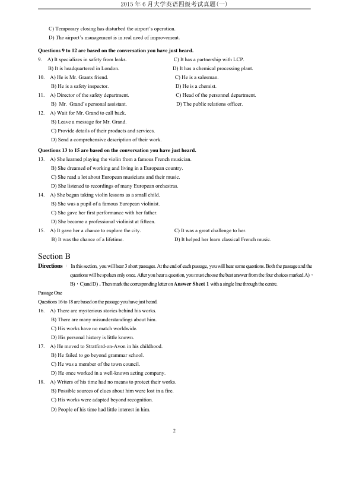
2015 年6 月大学英语四级考试真题(一)
2
C) Temporary closing has disturbed the airport’s operation.
D) The airport’s management is in real need of improvement.
Questions 9 to 12 are based on the conversation you have just heard.
9.
A) It specializes in safety from leaks.
C) It has a partnership with LCP.
B) It is headquartered in London.
D) It has a chemical processing plant.
10.
A) He is Mr. Grants friend.
C) He is a salesman.
B) He is a safety inspector.
D) He is a chemist.
11.
A) Director of the safety department.
C) Head of the personnel department.
B) Mr. Grand’s personal assistant.
D) The public relations officer.
12.
A) Wait for Mr. Grand to call back.
B) Leave a message for Mr. Grand.
C) Provide details of their products and services.
D) Send a comprehensive description of their work.
Questions 13 to 15 are based on the conversation you have just heard.
13.
A) She learned playing the violin from a famous French musician.
B) She dreamed of working and living in a European country.
C) She read a lot about European musicians and their music.
D) She listened to recordings of many European orchestras.
14.
A) She began taking violin lessons as a small child.
B) She was a pupil of a famous European violinist.
C) She gave her first performance with her father.
D) She became a professional violinist at fifteen.
15.
A) It gave her a chance to explore the city.
C) It was a great challenge to her.
B) It was the chance of a lifetime.
D) It helped her learn classical French music.
Section B
Directions ：Inthissection, youwillhear3shortpassages.Attheendofeachpassage, youwillhearsomequestions.Boththepassageandthe
questionswillbespokenonlyonce.Afteryouhearaquestion,youmustchoosethebestanswerfromthefourchoicesmarkedA)，
B)，C)andD) . ThenmarkthecorrespondingletteronAnswer Sheet 1 withasinglelinethroughthecentre.
PassageOne
Questions16to18arebasedonthepassageyouhavejustheard.
16.
A) There are mysterious stories behind his works.
B) There are many misunderstandings about him.
C) His works have no match worldwide.
D) His personal history is little known.
17.
A) He moved to Stratford-on-Avon in his childhood.
B) He failed to go beyond grammar school.
C) He was a member of the town council.
D) He once worked in a well-known acting company.
18.
A) Writers of his time had no means to protect their works.
B) Possible sources of clues about him were lost in a fire.
C) His works were adapted beyond recognition.
D) People of his time had little interest in him.
查看 / 复制本页文字
2015 年6 月大学英语四级考试真题(一) 2 C) Temporary closing has disturbed the airport’s operation. D) The airport’s management is in real need of improvement. Questions 9 to 12 are based on the conversation you have just heard. 9. A) It specializes in safety from leaks. C) It has a partnership with LCP. B) It is headquartered in London. D) It has a chemical processing plant. 10. A) He is Mr. Grants friend. C) He is a salesman. B) He is a safety inspector. D) He is a chemist. 11. A) Director of the safety department. C) Head of the personnel department. B) Mr. Grand’s personal assistant. D) The public relations officer. 12. A) Wait for Mr. Grand to call back. B) Leave a message for Mr. Grand. C) Provide details of their products and services. D) Send a comprehensive description of their work. Questions 13 to 15 are based on the conversation you have just heard. 13. A) She learned playing the violin from a famous French musician. B) She dreamed of working and living in a European country. C) She read a lot about European musicians and their music. D) She listened to recordings of many European orchestras. 14. A) She began taking violin lessons as a small child. B) She was a pupil of a famous European violinist. C) She gave her first performance with her father. D) She became a professional violinist at fifteen. 15. A) It gave her a chance to explore the city. C) It was a great challenge to her. B) It was the chance of a lifetime. D) It helped her learn classical French music. Section B Directions ：Inthissection, youwillhear3shortpassages.Attheendofeachpassage, youwillhearsomequestions.Boththepassageandthe questionswillbespokenonlyonce.Afteryouhearaquestion,youmustchoosethebestanswerfromthefourchoicesmarkedA)， B)，C)andD) . ThenmarkthecorrespondingletteronAnswer Sheet 1 withasinglelinethroughthecentre. PassageOne Questions16to18arebasedonthepassageyouhavejustheard. 16. A) There are mysterious stories behind his works. B) There are many misunderstandings about him. C) His works have no match worldwide. D) His personal history is little known. 17. A) He moved to Stratford-on-Avon in his childhood. B) He failed to go beyond grammar school. C) He was a member of the town council. D) He once worked in a well-known acting company. 18. A) Writers of his time had no means to protect their works. B) Possible sources of clues about him were lost in a fire. C) His works were adapted beyond recognition. D) People of his time had little interest in him.
第 3 / 25 页
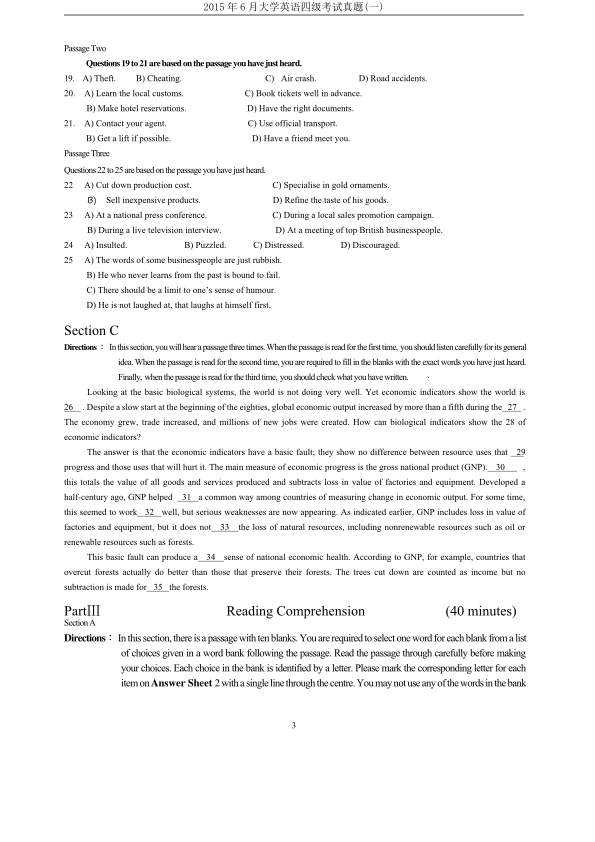
2015 年6 月大学英语四级考试真题(一)
3
PassageTwo
Questions19to21arebasedonthepassageyouhavejustheard.
19.
A) Theft.
B) Cheating.
C) Air crash.
D) Road accidents.
20.
A) Learn the local customs.
C) Book tickets well in advance.
B) Make hotel reservations.
D) Have the right documents.
21.
A) Contact your agent.
C) Use official transport.
B) Get a lift if possible.
D) Have a friend meet you.
PassageThree
Questions22to25arebasedonthepassageyouhavejustheard.
22
A) Cut down production cost.
C) Specialise in gold ornaments.
B)
Sell inexpensive products.
D) Refine the taste of his goods.
23
A) At a national press conference.
C) During a local sales promotion campaign.
B) During a live television interview.
D) At a meeting of top British businesspeople.
24
A) Insulted.
B) Puzzled.
C) Distressed.
D) Discouraged.
25
A) The words of some businesspeople are just rubbish.
B) He who never learns from the past is bound to fail.
C) There should be a limit to one’s sense of humour.
D) He is not laughed at, that laughs at himself first.
Section C
Directions：Inthissection,youwillhearapassagethreetimes.Whenthepassageisreadforthefirsttime, youshouldlistencarefullyforitsgeneral
idea. When the passage is read for the second time,you are required to fillin the blanks with the exact words you have just heard.
Finally, whenthepassageisreadforthethirdtime, youshouldcheckwhatyouhavewritten.
、
Looking at the basic biological systems, the world is not doing very well. Yet economic indicators show the world is
26
. Despite a slow start at the beginning of the eighties, global economic output increased by more than a fifth during the 27 .
The economy grew, trade increased, and millions of new jobs were created. How can biological indicators show the 28 of
economic indicators?
The answer is that the economic indicators have a basic fault; they show no difference between resource uses that
29
progress and those uses that will hurt it. The main measure of economic progress is the gross national product (GNP).
30
,
this totals the value of all goods and services produced and subtracts loss in value of factories and equipment. Developed a
half-century ago, GNP helped
31
a common way among countries of measuring change in economic output. For some time,
this seemed to work
32
well, but serious weaknesses are now appearing. As indicated earlier, GNP includes loss in value of
factories and equipment, but it does not
33
the loss of natural resources, including nonrenewable resources such as oil or
renewable resources such as forests.
This basic fault can produce a
34
sense of national economic health. According to GNP, for example, countries that
overcut forests actually do better than those that preserve their forests. The trees cut down are counted as income but no
subtraction is made for 35 the forests.
PartⅢ
Reading Comprehension
(40 minutes)
SectionA
Directions：Inthissection,thereisa passagewithtenblanks.Youarerequiredtoselectonewordforeachblankfromalist
of choices given in a word bank following the passage. Read the passage through carefully before making
your choices. Each choice in the bank is identified by a letter. Please mark the corresponding letter for each
itemonAnswer Sheet 2withasinglelinethroughthecentre.Youmaynotuseanyofthewordsinthebank
查看 / 复制本页文字
2015 年6 月大学英语四级考试真题(一) 3 PassageTwo Questions19to21arebasedonthepassageyouhavejustheard. 19. A) Theft. B) Cheating. C) Air crash. D) Road accidents. 20. A) Learn the local customs. C) Book tickets well in advance. B) Make hotel reservations. D) Have the right documents. 21. A) Contact your agent. C) Use official transport. B) Get a lift if possible. D) Have a friend meet you. PassageThree Questions22to25arebasedonthepassageyouhavejustheard. 22 A) Cut down production cost. C) Specialise in gold ornaments. B) Sell inexpensive products. D) Refine the taste of his goods. 23 A) At a national press conference. C) During a local sales promotion campaign. B) During a live television interview. D) At a meeting of top British businesspeople. 24 A) Insulted. B) Puzzled. C) Distressed. D) Discouraged. 25 A) The words of some businesspeople are just rubbish. B) He who never learns from the past is bound to fail. C) There should be a limit to one’s sense of humour. D) He is not laughed at, that laughs at himself first. Section C Directions：Inthissection,youwillhearapassagethreetimes.Whenthepassageisreadforthefirsttime, youshouldlistencarefullyforitsgeneral idea. When the passage is read for the second time,you are required to fillin the blanks with the exact words you have just heard. Finally, whenthepassageisreadforthethirdtime, youshouldcheckwhatyouhavewritten. 、 Looking at the basic biological systems, the world is not doing very well. Yet economic indicators show the world is 26 . Despite a slow start at the beginning of the eighties, global economic output increased by more than a fifth during the 27 . The economy grew, trade increased, and millions of new jobs were created. How can biological indicators show the 28 of economic indicators? The answer is that the economic indicators have a basic fault; they show no difference between resource uses that 29 progress and those uses that will hurt it. The main measure of economic progress is the gross national product (GNP). 30 , this totals the value of all goods and services produced and subtracts loss in value of factories and equipment. Developed a half-century ago, GNP helped 31 a common way among countries of measuring change in economic output. For some time, this seemed to work 32 well, but serious weaknesses are now appearing. As indicated earlier, GNP includes loss in value of factories and equipment, but it does not 33 the loss of natural resources, including nonrenewable resources such as oil or renewable resources such as forests. This basic fault can produce a 34 sense of national economic health. According to GNP, for example, countries that overcut forests actually do better than those that preserve their forests. The trees cut down are counted as income but no subtraction is made for 35 the forests. PartⅢ Reading Comprehension (40 minutes) SectionA Directions：Inthissection,thereisa passagewithtenblanks.Youarerequiredtoselectonewordforeachblankfromalist of choices given in a word bank following the passage. Read the passage through carefully before making your choices. Each choice in the bank is identified by a letter. Please mark the corresponding letter for each itemonAnswer Sheet 2withasinglelinethroughthecentre.Youmaynotuseanyofthewordsinthebank
第 4 / 25 页
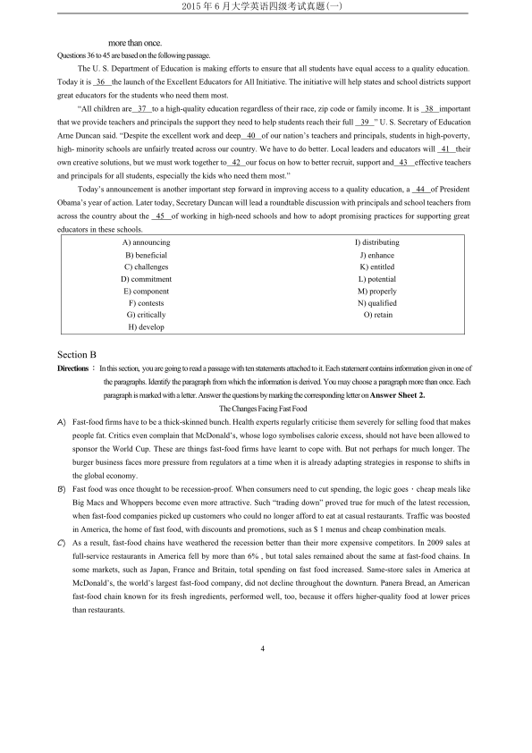
2015 年6 月大学英语四级考试真题(一)
4
morethan once.
Questions36to45arebasedonthefollowingpassage.
The U. S. Department of Education is making efforts to ensure that all students have equal access to a quality education.
Today it is 36
the launch of the Excellent Educators for All Initiative. The initiative will help states and school districts support
great educators for the students who need them most.
“All children are 37 to a high-quality education regardless of their race, zip code or family income. It is 38 important
that we provide teachers and principals the support they need to help students reach their full
39 ” U. S. Secretary of Education
Arne Duncan said. “Despite the excellent work and deep 40 of our nation’s teachers and principals, students in high-poverty,
high- minority schools are unfairly treated across our country. We have to do better. Local leaders and educators will 41 their
own creative solutions, but we must work together to 42 our focus on how to better recruit, support and 43
effective teachers
and principals for all students, especially the kids who need them most.”
Today’s announcement is another important step forward in improving access to a quality education, a
44 of President
Obama’s year of action. Later today, Secretary Duncan will lead a roundtable discussion with principals and school teachers from
across the country about the
45
of working in high-need schools and how to adopt promising practices for supporting great
educators in these schools.
Section B
Directions：Inthissection, youaregoingtoreadapassagewithtenstatementsattachedtoit.Eachstatementcontainsinformationgiveninoneof
the paragraphs. Identify the paragraph from which the information is derived. You may choose a paragraph more than once. Each
paragraphismarkedwithaletter.AnswerthequestionsbymarkingthecorrespondingletteronAnswer Sheet 2.
TheChangesFacingFastFood
A)
Fast-food firms have to be a thick-skinned bunch. Health experts regularly criticise them severely for selling food that makes
people fat. Critics even complain that McDonald’s, whose logo symbolises calorie excess, should not have been allowed to
sponsor the World Cup. These are things fast-food firms have learnt to cope with. But not perhaps for much longer. The
burger business faces more pressure from regulators at a time when it is already adapting strategies in response to shifts in
the global economy.
B)
Fast food was once thought to be recession-proof. When consumers need to cut spending, the logic goes，cheap meals like
Big Macs and Whoppers become even more attractive. Such “trading down” proved true for much of the latest recession,
when fast-food companies picked up customers who could no longer afford to eat at casual restaurants. Traffic was boosted
in America, the home of fast food, with discounts and promotions, such as $ 1 menus and cheap combination meals.
C)
As a result, fast-food chains have weathered the recession better than their more expensive competitors. In 2009 sales at
full-service restaurants in America fell by more than 6% , but total sales remained about the same at fast-food chains. In
some markets, such as Japan, France and Britain, total spending on fast food increased. Same-store sales in America at
McDonald’s, the world’s largest fast-food company, did not decline throughout the downturn. Panera Bread, an American
fast-food chain known for its fresh ingredients, performed well, too, because it offers higher-quality food at lower prices
than restaurants.
A) announcing
I) distributing
B) beneficial
J) enhance
C) challenges
K) entitled
D) commitment
L) potential
E) component
M) properly
F) contests
N) qualified
G) critically
O) retain
H) develop
查看 / 复制本页文字
2015 年6 月大学英语四级考试真题(一) 4 morethan once. Questions36to45arebasedonthefollowingpassage. The U. S. Department of Education is making efforts to ensure that all students have equal access to a quality education. Today it is 36 the launch of the Excellent Educators for All Initiative. The initiative will help states and school districts support great educators for the students who need them most. “All children are 37 to a high-quality education regardless of their race, zip code or family income. It is 38 important that we provide teachers and principals the support they need to help students reach their full 39 ” U. S. Secretary of Education Arne Duncan said. “Despite the excellent work and deep 40 of our nation’s teachers and principals, students in high-poverty, high- minority schools are unfairly treated across our country. We have to do better. Local leaders and educators will 41 their own creative solutions, but we must work together to 42 our focus on how to better recruit, support and 43 effective teachers and principals for all students, especially the kids who need them most.” Today’s announcement is another important step forward in improving access to a quality education, a 44 of President Obama’s year of action. Later today, Secretary Duncan will lead a roundtable discussion with principals and school teachers from across the country about the 45 of working in high-need schools and how to adopt promising practices for supporting great educators in these schools. Section B Directions：Inthissection, youaregoingtoreadapassagewithtenstatementsattachedtoit.Eachstatementcontainsinformationgiveninoneof the paragraphs. Identify the paragraph from which the information is derived. You may choose a paragraph more than once. Each paragraphismarkedwithaletter.AnswerthequestionsbymarkingthecorrespondingletteronAnswer Sheet 2. TheChangesFacingFastFood A) Fast-food firms have to be a thick-skinned bunch. Health experts regularly criticise them severely for selling food that makes people fat. Critics even complain that McDonald’s, whose logo symbolises calorie excess, should not have been allowed to sponsor the World Cup. These are things fast-food firms have learnt to cope with. But not perhaps for much longer. The burger business faces more pressure from regulators at a time when it is already adapting strategies in response to shifts in the global economy. B) Fast food was once thought to be recession-proof. When consumers need to cut spending, the logic goes，cheap meals like Big Macs and Whoppers become even more attractive. Such “trading down” proved true for much of the latest recession, when fast-food companies picked up customers who could no longer afford to eat at casual restaurants. Traffic was boosted in America, the home of fast food, with discounts and promotions, such as $ 1 menus and cheap combination meals. C) As a result, fast-food chains have weathered the recession better than their more expensive competitors. In 2009 sales at full-service restaurants in America fell by more than 6% , but total sales remained about the same at fast-food chains. In some markets, such as Japan, France and Britain, total spending on fast food increased. Same-store sales in America at McDonald’s, the world’s largest fast-food company, did not decline throughout the downturn. Panera Bread, an American fast-food chain known for its fresh ingredients, performed well, too, because it offers higher-quality food at lower prices than restaurants. A) announcing I) distributing B) beneficial J) enhance C) challenges K) entitled D) commitment L) potential E) component M) properly F) contests N) qualified G) critically O) retain H) develop
第 5 / 25 页
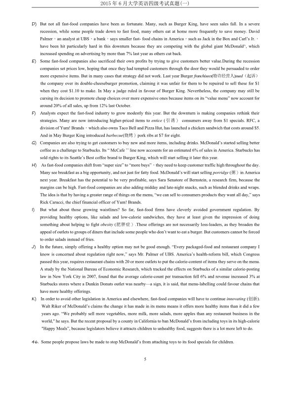
2015 年6 月大学英语四级考试真题(一)
5
D) But not all fast-food companies have been as fortunate. Many, such as Burger King, have seen sales fall. In a severe
recession, while some people trade down to fast food, many others eat at home more frequently to save money. David
Palmer，an analyst at UBS，a bank，says smaller fast- food chains in America，such as Jack in the Box and Carl’s Jr.，
have been hit particularly hard in this downturn because they are competing with the global giant McDonald^, which
increased spending on advertising by more than 7% last year as others cut back.
E)
Some fast-food companies also sacrificed their own profits by trying to give customers better value.During the recession
companies set prices low, hoping that once they had tempted customers through the door they would be persuaded to order
more expensive items. But in many cases that strategy did not work. Last year Burger franchisees(特许经营人)sued（起诉）
the company over its double-cheeseburger promotion, claiming it was unfair for them to be repuired to sell these for $1
when they cost $1.10 to make. In May a judge ruled in favour of Burger King. Nevertheless, the company may still be
cursing its decision to promote cheap choices over more expensive ones because items on its “value menu” now account for
around 20% of all sales, up from 12% last October.
F)
Analysts expect the fast-food industry to grow modestly this year. But the downturn is making companies rethink their
strategies. Many are now introducing higher-priced items to entice (引诱）consumers away from $1 specials. RFC, a
division of Yum! Brands，which also owns Taco Bell and Pizza Hut, has launched a chicken sandwich that costs around $5.
And in May Burger King introduced barbecue(烧烤）pork ribs at $7 for eight.
G)
Companies are also trying to get customers to buy new and more items, including drinks. McDonald’s started selling better
coffee as a challenge to Starbucks. Its “ McCafe ’’ line now accounts for an estimated 6% of sales in America. Starbucks has
sold rights to its Seattle’s Best coffee brand to Burger King, which will start selling it later this year.
H)
As fast-food companies shift from “super size” to “more buys”，they need to keep customer traffic high throughout the day.
Many see breakfast as a big opportunity, and not just for fatty food. McDonald’s will start selling porridge (粥）in America
next year. Breakfast has the potential to be very profitable, says Sara Senatore of Bernstein, a research firm, because the
margins can be high. Fast-food companies are also adding midday and late-night snacks, such as blended drinks and wraps.
The idea is that by having a greater range of things on the menu, “we can sell to consumers products they want all day,” says
Rick Carucci, the chief financial officer of Yum! Brands.
I)
But what about those growing waistlines? So far, fast-food firms have cleverly avoided government regulation. By
providing healthy options, like salads and low-calorie sandwiches, they have at least given the impression of doing
something about helping to fight obesity (肥胖症）.These offerings are not necessarily loss-leaders, as they broaden the
appeal of outlets to groups of diners that include some people who don’t want to eat a burger. But customers cannot be forced
to order salads instead of fries.
J)
In the future, simply offering a healthy option may not be good enough. “Every packaged-food and restaurant company I
know is concerned about regulation right now,” says Mr. Palmer of UBS. America’s health-reform bill, which Congress
passed this year, requires restaurant chains with 20 or more outlets to put the calorie-content of items they serve on the menu.
A study by the National Bureau of Economic Research, which tracked the effects on Starbucks of a similar calorie-posting
law in New York City in 2007, found that the average calorie-count per transaction fell 6% and revenue increased 3% at
Starbucks stores where a Dunkin Donuts outlet was nearby—a sign, it is said, that menu-labelling could favour chains that
have more healthy offerings.
K)
In order to avoid other legislation in America and elsewhere, fast-food companies will have to continue innovating (创新).
Walt Riker of McDonald’s claims the change it has made in its menu means it offers more healthy items than it did a few
years ago. “We probably sell more vegetables, more milk, more salads, more apples than any restaurant business in the
world," he says. But the recent proposal by a county in California to ban McDonald’s from including toys in its high-calorie
"Happy Meals”, because legislators believe it attracts children to unhealthy food, suggests there is a lot more left to do.
46. Some people propose laws be made to stop McDonald’s from attaching toys to its food specials for children.
查看 / 复制本页文字
2015 年6 月大学英语四级考试真题(一) 5 D) But not all fast-food companies have been as fortunate. Many, such as Burger King, have seen sales fall. In a severe recession, while some people trade down to fast food, many others eat at home more frequently to save money. David Palmer，an analyst at UBS，a bank，says smaller fast- food chains in America，such as Jack in the Box and Carl’s Jr.， have been hit particularly hard in this downturn because they are competing with the global giant McDonald^, which increased spending on advertising by more than 7% last year as others cut back. E) Some fast-food companies also sacrificed their own profits by trying to give customers better value.During the recession companies set prices low, hoping that once they had tempted customers through the door they would be persuaded to order more expensive items. But in many cases that strategy did not work. Last year Burger franchisees(特许经营人)sued（起诉） the company over its double-cheeseburger promotion, claiming it was unfair for them to be repuired to sell these for $1 when they cost $1.10 to make. In May a judge ruled in favour of Burger King. Nevertheless, the company may still be cursing its decision to promote cheap choices over more expensive ones because items on its “value menu” now account for around 20% of all sales, up from 12% last October. F) Analysts expect the fast-food industry to grow modestly this year. But the downturn is making companies rethink their strategies. Many are now introducing higher-priced items to entice (引诱）consumers away from $1 specials. RFC, a division of Yum! Brands，which also owns Taco Bell and Pizza Hut, has launched a chicken sandwich that costs around $5. And in May Burger King introduced barbecue(烧烤）pork ribs at $7 for eight. G) Companies are also trying to get customers to buy new and more items, including drinks. McDonald’s started selling better coffee as a challenge to Starbucks. Its “ McCafe ’’ line now accounts for an estimated 6% of sales in America. Starbucks has sold rights to its Seattle’s Best coffee brand to Burger King, which will start selling it later this year. H) As fast-food companies shift from “super size” to “more buys”，they need to keep customer traffic high throughout the day. Many see breakfast as a big opportunity, and not just for fatty food. McDonald’s will start selling porridge (粥）in America next year. Breakfast has the potential to be very profitable, says Sara Senatore of Bernstein, a research firm, because the margins can be high. Fast-food companies are also adding midday and late-night snacks, such as blended drinks and wraps. The idea is that by having a greater range of things on the menu, “we can sell to consumers products they want all day,” says Rick Carucci, the chief financial officer of Yum! Brands. I) But what about those growing waistlines? So far, fast-food firms have cleverly avoided government regulation. By providing healthy options, like salads and low-calorie sandwiches, they have at least given the impression of doing something about helping to fight obesity (肥胖症）.These offerings are not necessarily loss-leaders, as they broaden the appeal of outlets to groups of diners that include some people who don’t want to eat a burger. But customers cannot be forced to order salads instead of fries. J) In the future, simply offering a healthy option may not be good enough. “Every packaged-food and restaurant company I know is concerned about regulation right now,” says Mr. Palmer of UBS. America’s health-reform bill, which Congress passed this year, requires restaurant chains with 20 or more outlets to put the calorie-content of items they serve on the menu. A study by the National Bureau of Economic Research, which tracked the effects on Starbucks of a similar calorie-posting law in New York City in 2007, found that the average calorie-count per transaction fell 6% and revenue increased 3% at Starbucks stores where a Dunkin Donuts outlet was nearby—a sign, it is said, that menu-labelling could favour chains that have more healthy offerings. K) In order to avoid other legislation in America and elsewhere, fast-food companies will have to continue innovating (创新). Walt Riker of McDonald’s claims the change it has made in its menu means it offers more healthy items than it did a few years ago. “We probably sell more vegetables, more milk, more salads, more apples than any restaurant business in the world," he says. But the recent proposal by a county in California to ban McDonald’s from including toys in its high-calorie "Happy Meals”, because legislators believe it attracts children to unhealthy food, suggests there is a lot more left to do. 46. Some people propose laws be made to stop McDonald’s from attaching toys to its food specials for children.
第 6 / 25 页
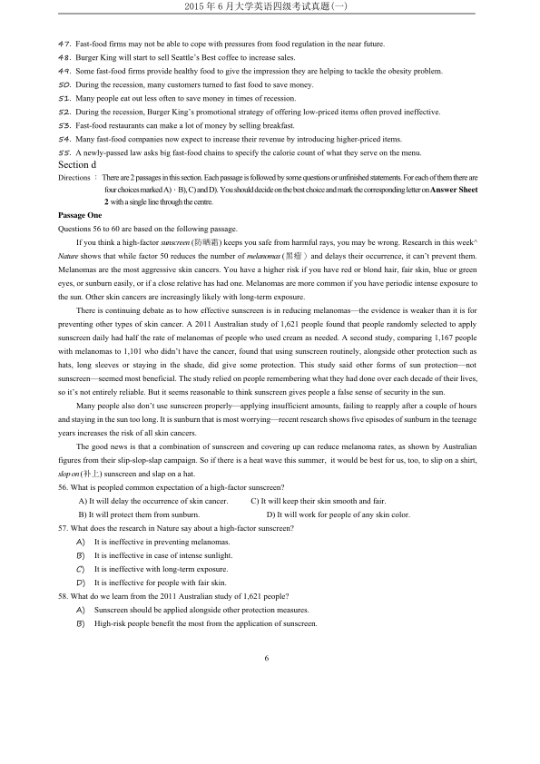
2015 年6 月大学英语四级考试真题(一)
6
47. Fast-food firms may not be able to cope with pressures from food regulation in the near future.
48. Burger King will start to sell Seattle’s Best coffee to increase sales.
49. Some fast-food firms provide healthy food to give the impression they are helping to tackle the obesity problem.
50. During the recession, many customers turned to fast food to save money.
51. Many people eat out less often to save money in times of recession.
52. During the recession, Burger King’s promotional strategy of offering low-priced items often proved ineffective.
53. Fast-food restaurants can make a lot of money by selling breakfast.
54. Many fast-food companies now expect to increase their revenue by introducing higher-priced items.
55. A newly-passed law asks big fast-food chains to specify the calorie count of what they serve on the menu.
Section d
Directions ：Thereare2passagesinthissection.Eachpassageisfollowedbysomequestionsorunfinishedstatements.Foreachofthemthereare
fourchoicesmarkedA)，B),C)andD). YoushoulddecideonthebestchoiceandmarkthecorrespondingletteronAnswer Sheet
2 withasinglelinethroughthecentre.
Passage One
Questions 56 to 60 are based on the following passage.
If you think a high-factor sunscreen (防晒霜) keeps you safe from harmful rays, you may be wrong. Research in this week^
Nature shows that while factor 50 reduces the number of melanomas (黑瘤）and delays their occurrence, it can’t prevent them.
Melanomas are the most aggressive skin cancers. You have a higher risk if you have red or blond hair, fair skin, blue or green
eyes, or sunburn easily, or if a close relative has had one. Melanomas are more common if you have periodic intense exposure to
the sun. Other skin cancers are increasingly likely with long-term exposure.
There is continuing debate as to how effective sunscreen is in reducing melanomas—the evidence is weaker than it is for
preventing other types of skin cancer. A 2011 Australian study of 1,621 people found that people randomly selected to apply
sunscreen daily had half the rate of melanomas of people who used cream as needed. A second study, comparing 1,167 people
with melanomas to 1,101 who didn’t have the cancer, found that using sunscreen routinely, alongside other protection such as
hats, long sleeves or staying in the shade, did give some protection. This study said other forms of sun protection—not
sunscreen—seemed most beneficial. The study relied on people remembering what they had done over each decade of their lives,
so it’s not entirely reliable. But it seems reasonable to think sunscreen gives people a false sense of security in the sun.
Many people also don’t use sunscreen properly—applying insufficient amounts, failing to reapply after a couple of hours
and staying in the sun too long. It is sunburn that is most worrying—recent research shows five episodes of sunburn in the teenage
years increases the risk of all skin cancers.
The good news is that a combination of sunscreen and covering up can reduce melanoma rates, as shown by Australian
figures from their slip-slop-slap campaign. So if there is a heat wave this summer, it would be best for us, too, to slip on a shirt,
slopon(补上) sunscreen and slap on a hat.
56. What is peopled common expectation of a high-factor sunscreen?
A) It will delay the occurrence of skin cancer.
C) It will keep their skin smooth and fair.
B) It will protect them from sunburn.
D) It will work for people of any skin color.
57. What does the research in Nature say about a high-factor sunscreen?
A)
It is ineffective in preventing melanomas.
B)
It is ineffective in case of intense sunlight.
C)
It is ineffective with long-term exposure.
D)
It is ineffective for people with fair skin.
58. What do we learn from the 2011 Australian study of 1,621 people?
A)
Sunscreen should be applied alongside other protection measures.
B)
High-risk people benefit the most from the application of sunscreen.
查看 / 复制本页文字
2015 年6 月大学英语四级考试真题(一) 6 47. Fast-food firms may not be able to cope with pressures from food regulation in the near future. 48. Burger King will start to sell Seattle’s Best coffee to increase sales. 49. Some fast-food firms provide healthy food to give the impression they are helping to tackle the obesity problem. 50. During the recession, many customers turned to fast food to save money. 51. Many people eat out less often to save money in times of recession. 52. During the recession, Burger King’s promotional strategy of offering low-priced items often proved ineffective. 53. Fast-food restaurants can make a lot of money by selling breakfast. 54. Many fast-food companies now expect to increase their revenue by introducing higher-priced items. 55. A newly-passed law asks big fast-food chains to specify the calorie count of what they serve on the menu. Section d Directions ：Thereare2passagesinthissection.Eachpassageisfollowedbysomequestionsorunfinishedstatements.Foreachofthemthereare fourchoicesmarkedA)，B),C)andD). YoushoulddecideonthebestchoiceandmarkthecorrespondingletteronAnswer Sheet 2 withasinglelinethroughthecentre. Passage One Questions 56 to 60 are based on the following passage. If you think a high-factor sunscreen (防晒霜) keeps you safe from harmful rays, you may be wrong. Research in this week^ Nature shows that while factor 50 reduces the number of melanomas (黑瘤）and delays their occurrence, it can’t prevent them. Melanomas are the most aggressive skin cancers. You have a higher risk if you have red or blond hair, fair skin, blue or green eyes, or sunburn easily, or if a close relative has had one. Melanomas are more common if you have periodic intense exposure to the sun. Other skin cancers are increasingly likely with long-term exposure. There is continuing debate as to how effective sunscreen is in reducing melanomas—the evidence is weaker than it is for preventing other types of skin cancer. A 2011 Australian study of 1,621 people found that people randomly selected to apply sunscreen daily had half the rate of melanomas of people who used cream as needed. A second study, comparing 1,167 people with melanomas to 1,101 who didn’t have the cancer, found that using sunscreen routinely, alongside other protection such as hats, long sleeves or staying in the shade, did give some protection. This study said other forms of sun protection—not sunscreen—seemed most beneficial. The study relied on people remembering what they had done over each decade of their lives, so it’s not entirely reliable. But it seems reasonable to think sunscreen gives people a false sense of security in the sun. Many people also don’t use sunscreen properly—applying insufficient amounts, failing to reapply after a couple of hours and staying in the sun too long. It is sunburn that is most worrying—recent research shows five episodes of sunburn in the teenage years increases the risk of all skin cancers. The good news is that a combination of sunscreen and covering up can reduce melanoma rates, as shown by Australian figures from their slip-slop-slap campaign. So if there is a heat wave this summer, it would be best for us, too, to slip on a shirt, slopon(补上) sunscreen and slap on a hat. 56. What is peopled common expectation of a high-factor sunscreen? A) It will delay the occurrence of skin cancer. C) It will keep their skin smooth and fair. B) It will protect them from sunburn. D) It will work for people of any skin color. 57. What does the research in Nature say about a high-factor sunscreen? A) It is ineffective in preventing melanomas. B) It is ineffective in case of intense sunlight. C) It is ineffective with long-term exposure. D) It is ineffective for people with fair skin. 58. What do we learn from the 2011 Australian study of 1,621 people? A) Sunscreen should be applied alongside other protection measures. B) High-risk people benefit the most from the application of sunscreen.
第 7 / 25 页
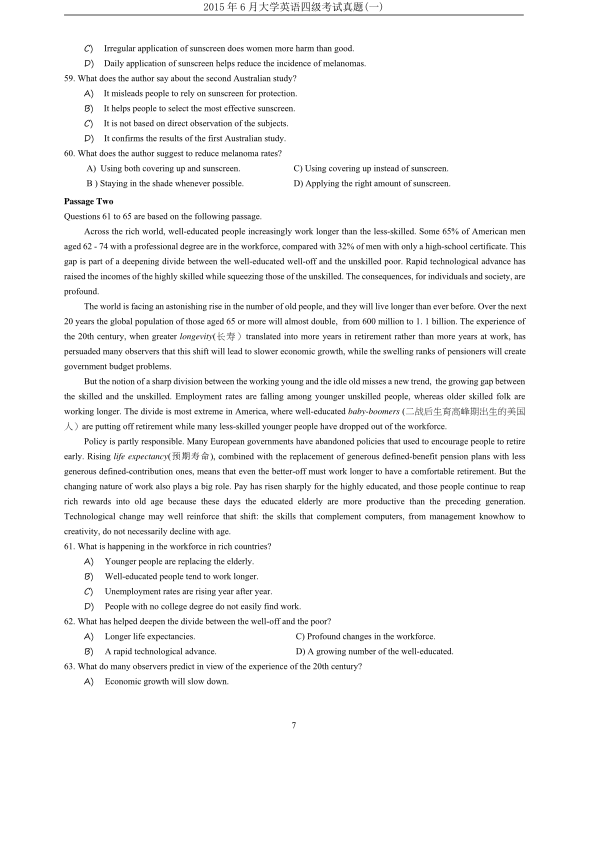
2015 年6 月大学英语四级考试真题(一)
7
C)
Irregular application of sunscreen does women more harm than good.
D)
Daily application of sunscreen helps reduce the incidence of melanomas.
59. What does the author say about the second Australian study?
A)
It misleads people to rely on sunscreen for protection.
B)
It helps people to select the most effective sunscreen.
C)
It is not based on direct observation of the subjects.
D)
It confirms the results of the first Australian study.
60. What does the author suggest to reduce melanoma rates?
A) Using both covering up and sunscreen.
C) Using covering up instead of sunscreen.
B ) Staying in the shade whenever possible.
D) Applying the right amount of sunscreen.
Passage Two
Questions 61 to 65 are based on the following passage.
Across the rich world, well-educated people increasingly work longer than the less-skilled. Some 65% of American men
aged 62 - 74 with a professional degree are in the workforce, compared with 32% of men with only a high-school certificate. This
gap is part of a deepening divide between the well-educated well-off and the unskilled poor. Rapid technological advance has
raised the incomes of the highly skilled while squeezing those of the unskilled. The consequences, for individuals and society, are
profound.
The world is facing an astonishing rise in the number of old people, and they will live longer than ever before. Over the next
20 years the global population of those aged 65 or more will almost double, from 600 million to 1. 1 billion. The experience of
the 20th century, when greater longevity(长寿）translated into more years in retirement rather than more years at work, has
persuaded many observers that this shift will lead to slower economic growth, while the swelling ranks of pensioners will create
government budget problems.
But the notion of a sharp division between the working young and the idle old misses a new trend, the growing gap between
the skilled and the unskilled. Employment rates are falling among younger unskilled people, whereas older skilled folk are
working longer. The divide is most extreme in America, where well-educated baby-boomers (二战后生育高峰期出生的美国
人）are putting off retirement while many less-skilled younger people have dropped out of the workforce.
Policy is partly responsible. Many European governments have abandoned policies that used to encourage people to retire
early. Rising life expectancy(预期寿命), combined with the replacement of generous defined-benefit pension plans with less
generous defined-contribution ones, means that even the better-off must work longer to have a comfortable retirement. But the
changing nature of work also plays a big role. Pay has risen sharply for the highly educated, and those people continue to reap
rich rewards into old age because these days the educated elderly are more productive than the preceding generation.
Technological change may well reinforce that shift: the skills that complement computers, from management knowhow to
creativity, do not necessarily decline with age.
61. What is happening in the workforce in rich countries?
A)
Younger people are replacing the elderly.
B)
Well-educated people tend to work longer.
C)
Unemployment rates are rising year after year.
D)
People with no college degree do not easily find work.
62. What has helped deepen the divide between the well-off and the poor?
A)
Longer life expectancies.
C) Profound changes in the workforce.
B)
A rapid technological advance.
D) A growing number of the well-educated.
63. What do many observers predict in view of the experience of the 20th century?
A)
Economic growth will slow down.
查看 / 复制本页文字
2015 年6 月大学英语四级考试真题(一) 7 C) Irregular application of sunscreen does women more harm than good. D) Daily application of sunscreen helps reduce the incidence of melanomas. 59. What does the author say about the second Australian study? A) It misleads people to rely on sunscreen for protection. B) It helps people to select the most effective sunscreen. C) It is not based on direct observation of the subjects. D) It confirms the results of the first Australian study. 60. What does the author suggest to reduce melanoma rates? A) Using both covering up and sunscreen. C) Using covering up instead of sunscreen. B ) Staying in the shade whenever possible. D) Applying the right amount of sunscreen. Passage Two Questions 61 to 65 are based on the following passage. Across the rich world, well-educated people increasingly work longer than the less-skilled. Some 65% of American men aged 62 - 74 with a professional degree are in the workforce, compared with 32% of men with only a high-school certificate. This gap is part of a deepening divide between the well-educated well-off and the unskilled poor. Rapid technological advance has raised the incomes of the highly skilled while squeezing those of the unskilled. The consequences, for individuals and society, are profound. The world is facing an astonishing rise in the number of old people, and they will live longer than ever before. Over the next 20 years the global population of those aged 65 or more will almost double, from 600 million to 1. 1 billion. The experience of the 20th century, when greater longevity(长寿）translated into more years in retirement rather than more years at work, has persuaded many observers that this shift will lead to slower economic growth, while the swelling ranks of pensioners will create government budget problems. But the notion of a sharp division between the working young and the idle old misses a new trend, the growing gap between the skilled and the unskilled. Employment rates are falling among younger unskilled people, whereas older skilled folk are working longer. The divide is most extreme in America, where well-educated baby-boomers (二战后生育高峰期出生的美国 人）are putting off retirement while many less-skilled younger people have dropped out of the workforce. Policy is partly responsible. Many European governments have abandoned policies that used to encourage people to retire early. Rising life expectancy(预期寿命), combined with the replacement of generous defined-benefit pension plans with less generous defined-contribution ones, means that even the better-off must work longer to have a comfortable retirement. But the changing nature of work also plays a big role. Pay has risen sharply for the highly educated, and those people continue to reap rich rewards into old age because these days the educated elderly are more productive than the preceding generation. Technological change may well reinforce that shift: the skills that complement computers, from management knowhow to creativity, do not necessarily decline with age. 61. What is happening in the workforce in rich countries? A) Younger people are replacing the elderly. B) Well-educated people tend to work longer. C) Unemployment rates are rising year after year. D) People with no college degree do not easily find work. 62. What has helped deepen the divide between the well-off and the poor? A) Longer life expectancies. C) Profound changes in the workforce. B) A rapid technological advance. D) A growing number of the well-educated. 63. What do many observers predict in view of the experience of the 20th century? A) Economic growth will slow down.
第 8 / 25 页
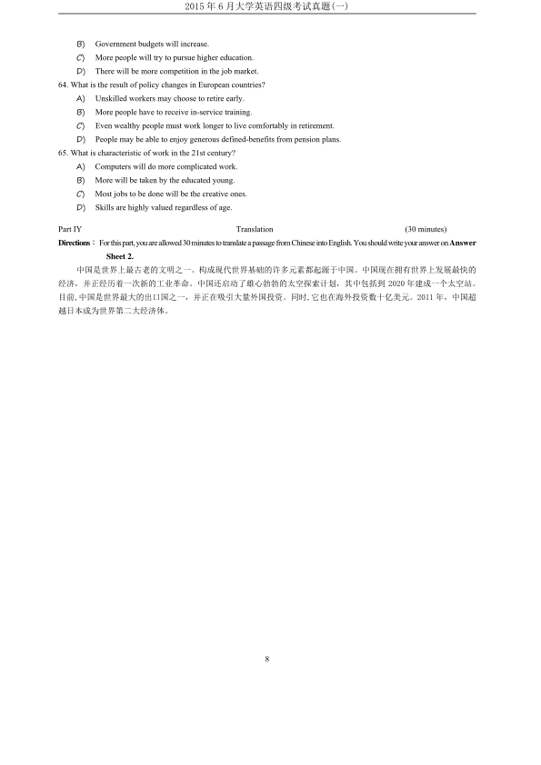
2015 年6 月大学英语四级考试真题(一)
8
B)
Government budgets will increase.
C)
More people will try to pursue higher education.
D)
There will be more competition in the job market.
64. What is the result of policy changes in European countries?
A)
Unskilled workers may choose to retire early.
B)
More people have to receive in-service training.
C)
Even wealthy people must work longer to live comfortably in retirement.
D)
People may be able to enjoy generous defined-benefits from pension plans.
65. What is characteristic of work in the 21st century?
A)
Computers will do more complicated work.
B)
More will be taken by the educated young.
C)
Most jobs to be done will be the creative ones.
D)
Skills are highly valued regardless of age.
Part IY
Translation
(30 minutes)
Directions：Forthispart,youareallowed30minutestotranslateapassagefromChineseintoEnglish.YoushouldwriteyouransweronAnswer
Sheet 2.
中国是世界上最古老的文明之一。构成现代世界基础的许多元素都起源于中国。中国现在拥有世界上发展最快的
经济，并正经历着一次新的工业革命。中国还启动了雄心勃勃的太空探索计划，其中包括到2020 年建成一个太空站。
目前,中国是世界最大的出口国之一，并正在吸引大量外国投资。同时,它也在海外投资数十亿美元。2011 年，中国超
越日本成为世界第二大经济体。
查看 / 复制本页文字
2015 年6 月大学英语四级考试真题(一) 8 B) Government budgets will increase. C) More people will try to pursue higher education. D) There will be more competition in the job market. 64. What is the result of policy changes in European countries? A) Unskilled workers may choose to retire early. B) More people have to receive in-service training. C) Even wealthy people must work longer to live comfortably in retirement. D) People may be able to enjoy generous defined-benefits from pension plans. 65. What is characteristic of work in the 21st century? A) Computers will do more complicated work. B) More will be taken by the educated young. C) Most jobs to be done will be the creative ones. D) Skills are highly valued regardless of age. Part IY Translation (30 minutes) Directions：Forthispart,youareallowed30minutestotranslateapassagefromChineseintoEnglish.YoushouldwriteyouransweronAnswer Sheet 2. 中国是世界上最古老的文明之一。构成现代世界基础的许多元素都起源于中国。中国现在拥有世界上发展最快的 经济，并正经历着一次新的工业革命。中国还启动了雄心勃勃的太空探索计划，其中包括到2020 年建成一个太空站。 目前,中国是世界最大的出口国之一，并正在吸引大量外国投资。同时,它也在海外投资数十亿美元。2011 年，中国超 越日本成为世界第二大经济体。
第 9 / 25 页
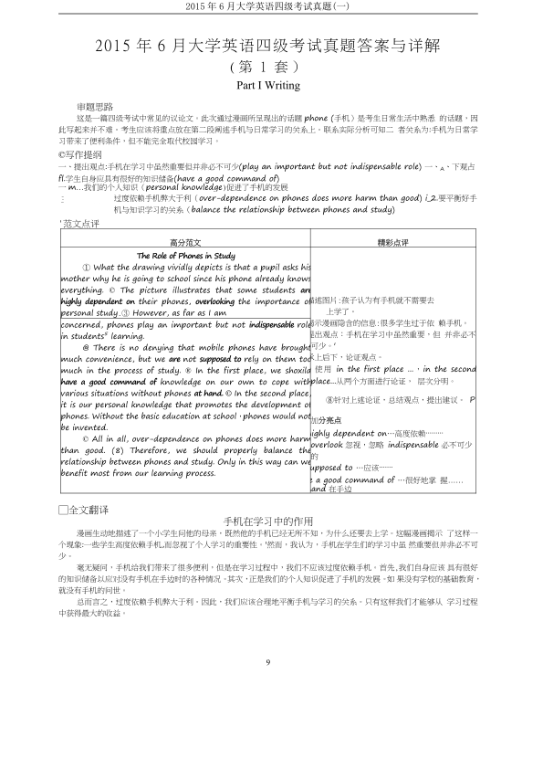
2015 年6 月大学英语四级考试真题(一)
9
三、总结观点
2015 年6 月大学英语四级考试真题答案与详解
( 第1 套）
Part I Writing
审题思路
这是一篇四级考试中常见的议论文。此次通过漫画所呈现出的话题phone (手机）是考生日常生活中熟悉的话题，因
此写起来并不难。考生应该将重点放在第二段阐述手机与日常学习的关系上。联系实际分析可知二者关系为:手机为日常学
习带来了便利条件，但不能完全取代校园学习。
©写作提纲
一、提出观点:手机在学习中虽然重要但并非必不可少(play an important but not indispensable role) 一、A、下观占
fl.学生自身应具有很好的知识储备(have a good command of)
一m…我们的个人知识（personal knowledge)促进了手机的发展
过度依赖手机弊大于利（over-dependence on phones does more harm than good) i_2.要平衡好手
机与知识学习的关系（balance the relationship between phones and study)
'范文点评
□全文翻译
手机在学习中的作用
漫画生动地描述了一个小学生问他的母亲，既然他的手机已经无所不知，为什么还要去上学。这幅漫画揭示了这样一
个现象:一些学生高度依赖手机,而忽视了个人学习的重要性。'然而，我认为，手机在学生们的学习中虽然重要但并非必不可
少。
毫无疑问，手机给我们带来了很多便利，但是在学习过程中，我们不应该过度依赖手机。首先,我们自身应该具有很好
的知识储备以应对没有手机在手边时的各种情况。其次，正是我们的个人知识促进了手机的发展。如果没有学校的基础教育，
就没有手机的问世。
总而言之，过度依赖手机弊大于利。因此，我们应该合理地平衡手机与学习的关系。只有这样我们才能够从学习过程
中获得最大的收益。
高分范文
精彩点评
The Role of Phones in Study
①What the drawing vividly depicts is that a pupil asks his
mother why he is going to school since his phone already knows
everything. © The picture illustrates that some students are
highly dependent on their phones, overlooking the importance of
personal study.③However, as far as I am
描述图片:孩子认为有手机就不需要去
上学了。
揭示漫画隐含的信息:很多学生过于依赖手机。
提出观点：手机在学习中虽然重要，但并非必不
可少。'
承上启下，论证观点。
© 使用in the first place ...，in the second
place...从两个方面进行论证，层次分明。
⑧针对上述论证，总结观点，提出建议。P
加分亮点
highly dependent on…高度依赖.........
overlook 忽视，忽略indispensable 必不可少
的
upposed to …应该.......
e a good command of …很好地掌握……
hand 在手边
concerned, phones play an important but not indispensable role
in students5 learning.
@ There is no denying that mobile phones have brought
much convenience, but we are not supposed to rely on them too
much in the process of study. ® In the first place, we shoxild
have a good command of knowledge on our own to cope with
various situations without phones at hand. © In the second place,
it is our personal knowledge that promotes the development of
phones. Without the basic education at school，phones would not
be invented.
© All in all, over-dependence on phones does more harm
than
good.
(8)
Therefore,
we
should
properly
balance
the
relationship between phones and study. Only in this way can we
benefit most from our learning process.
查看 / 复制本页文字
2015 年6 月大学英语四级考试真题(一) 9 三、总结观点 2015 年6 月大学英语四级考试真题答案与详解 ( 第1 套） Part I Writing 审题思路 这是一篇四级考试中常见的议论文。此次通过漫画所呈现出的话题phone (手机）是考生日常生活中熟悉的话题，因 此写起来并不难。考生应该将重点放在第二段阐述手机与日常学习的关系上。联系实际分析可知二者关系为:手机为日常学 习带来了便利条件，但不能完全取代校园学习。 ©写作提纲 一、提出观点:手机在学习中虽然重要但并非必不可少(play an important but not indispensable role) 一、A、下观占 fl.学生自身应具有很好的知识储备(have a good command of) 一m…我们的个人知识（personal knowledge)促进了手机的发展 过度依赖手机弊大于利（over-dependence on phones does more harm than good) i_2.要平衡好手 机与知识学习的关系（balance the relationship between phones and study) '范文点评 □全文翻译 手机在学习中的作用 漫画生动地描述了一个小学生问他的母亲，既然他的手机已经无所不知，为什么还要去上学。这幅漫画揭示了这样一 个现象:一些学生高度依赖手机,而忽视了个人学习的重要性。'然而，我认为，手机在学生们的学习中虽然重要但并非必不可 少。 毫无疑问，手机给我们带来了很多便利，但是在学习过程中，我们不应该过度依赖手机。首先,我们自身应该具有很好 的知识储备以应对没有手机在手边时的各种情况。其次，正是我们的个人知识促进了手机的发展。如果没有学校的基础教育， 就没有手机的问世。 总而言之，过度依赖手机弊大于利。因此，我们应该合理地平衡手机与学习的关系。只有这样我们才能够从学习过程 中获得最大的收益。 高分范文 精彩点评 The Role of Phones in Study ①What the drawing vividly depicts is that a pupil asks his mother why he is going to school since his phone already knows everything. © The picture illustrates that some students are highly dependent on their phones, overlooking the importance of personal study.③However, as far as I am 描述图片:孩子认为有手机就不需要去 上学了。 揭示漫画隐含的信息:很多学生过于依赖手机。 提出观点：手机在学习中虽然重要，但并非必不 可少。' 承上启下，论证观点。 © 使用in the first place ...，in the second place...从两个方面进行论证，层次分明。 ⑧针对上述论证，总结观点，提出建议。P 加分亮点 highly dependent on…高度依赖......... overlook 忽视，忽略indispensable 必不可少 的 upposed to …应该....... e a good command of …很好地掌握…… hand 在手边 concerned, phones play an important but not indispensable role in students5 learning. @ There is no denying that mobile phones have brought much convenience, but we are not supposed to rely on them too much in the process of study. ® In the first place, we shoxild have a good command of knowledge on our own to cope with various situations without phones at hand. © In the second place, it is our personal knowledge that promotes the development of phones. Without the basic education at school，phones would not be invented. © All in all, over-dependence on phones does more harm than good. (8) Therefore, we should properly balance the relationship between phones and study. Only in this way can we benefit most from our learning process.
第 10 / 25 页
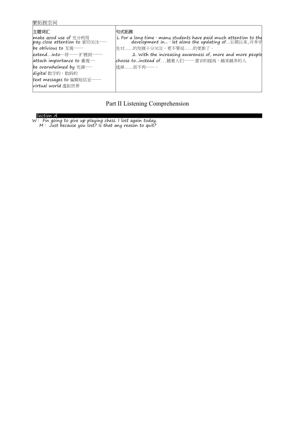
縻拓展空间
Part II Listening Comprehension
Section A
W：Fin going to give up playing chess. I lost again today.
M：Just because you lost? Is that any reason to quit?
主题词汇
句式拓展
make good use of 充分利用
L For a long time，many students have paid much attention to the
pay close attention to 密切关注.......
development in...，let alone the updating of…长期以来,许多学
be oblivious to 无视.........
生对……的发展十分关注，更不要说……的更新了。
extend…into…将......... 扩展到..........
2. With the increasing awareness of, more and more people
attach importance to 重视.....
choose to...instead of...随着人们..........意识的提高，越来越多的人
be overwhelmed by 充满.......
选择……而不再……。
digital 数字的，数码的
text messages to 编辑短信至.........
virtual world 虚拟世界
查看 / 复制本页文字
縻拓展空间 Part II Listening Comprehension Section A W：Fin going to give up playing chess. I lost again today. M：Just because you lost? Is that any reason to quit? 主题词汇 句式拓展 make good use of 充分利用 L For a long time，many students have paid much attention to the pay close attention to 密切关注....... development in...，let alone the updating of…长期以来,许多学 be oblivious to 无视......... 生对……的发展十分关注，更不要说……的更新了。 extend…into…将......... 扩展到.......... 2. With the increasing awareness of, more and more people attach importance to 重视..... choose to...instead of...随着人们..........意识的提高，越来越多的人 be overwhelmed by 充满....... 选择……而不再……。 digital 数字的，数码的 text messages to 编辑短信至......... virtual world 虚拟世界
第 11 / 25 页
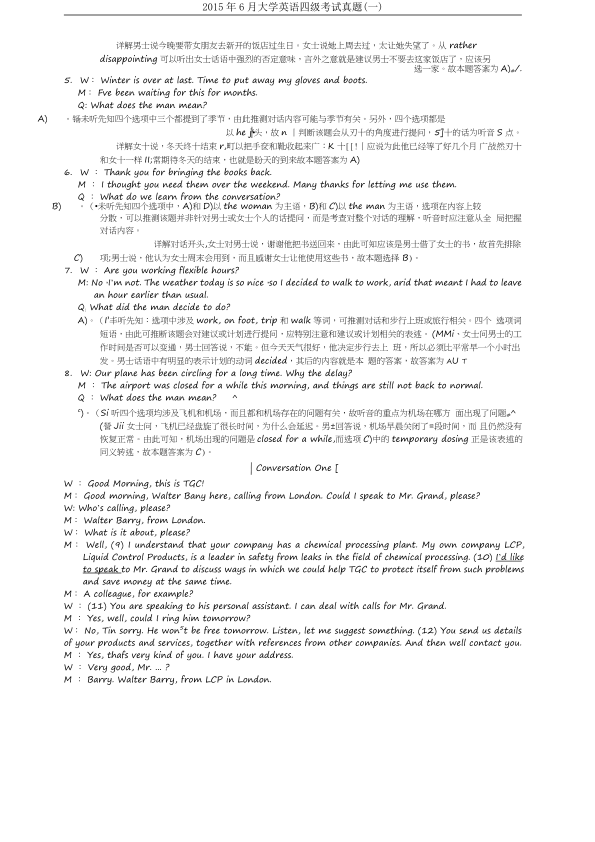
2015 年6 月大学英语四级考试真题(一)
详解男士说今晚要带女朋友去新开的饭店过生日。女士说她上周去过，太让她失望了。从rather
disappointing 可以听出女士话语中强烈的否定意味，言外之意就是建议男士不要去这家饭店了，应该另
选一家。故本题答案为A)#/.
5.
W：Winter is over at last. Time to put away my gloves and boots.
M：Fve been waiting for this for months.
Q: What does the man mean?
A)
。铴未听先知四个选项中三个都提到了季节，由此推测对话内容可能与季节有关。另外，四个选项都是
以he j|'•头，故n 丨判断该题会从刃十的角度进行提问，5]十的话为听音S 点。
详解女十说，冬天终十结束r,町以把手奁和靴收起来广：K 十[[!丨应说为此他已经等了好几个月广敁然刃十
和女十一样II;常期待冬天的结束，也就是盼天的到来故本题答案为A)
6.
W ：Thank you for bringing the books back.
M ：I thought you need them over the weekend. Many thanks for letting me use them.
Q ：What do we learn from the conversation?
B)
。（•未听先知四个选项中，A)和D)以the woman 为主语，B)和C)以the man 为主语，选项在内容上较
分散，可以推测该题并非针对男士或女士个人的话提问，而是考查对整个对话的理解，听音时应注意从全局把握
对话内容。
详解对话开头,女士对男士说，谢谢他把书送回来，由此可知应该是男士借了女士的书，故首先排除
C)
项;男士说，他认为女士周末会用到，而且感谢女士让他使用这些书，故本题选择B)。
7.
W ：Are you working flexible hours?
M: No，I’m not. The weather today is so nice，so I decided to walk to work, arid that meant I had to leave
an hour earlier than usual.
Q: What did the man decide to do?
A)。（I’丰听先知：选项中涉及work, on foot, trip 和walk 等词，可推测对话和步行上班或旅行相关。四个选项词
短语，由此可推断该题会对建议或计划进行提问，应特别注意和建议或计划相关的表述。(MMi、女士问男士的工
作时间是否可以变通，男士回答说，不能。但今天天气很好，他决定步行去上班，所以必须比平常早一个小时出
发。男士话语中有明显的表示计划的动词decided，其后的内容就是本题的答案，故答案为AU T
8.
W: Our plane has been circling for a long time. Why the delay?
M ：The airport was closed for a while this morning, and things are still not back to normal.
Q ：What does the man mean?
^
c)。（Si 听四个选项均涉及飞机和机场，而且都和机场存在的问题有关，故听音的重点为机场在哪方面出现了问题#^
(營Jii 女士问，飞机已经盘旋了很长时间，为什么会延迟。男±回答说，机场早晨关闭了=段时间，而且仍然没有
恢复正常。由此可知，机场出现的问题是closed for a while,而选项C)中的temporary dosing 正是该表述的
同义转述，故本题答案为C)。
| Conversation One [
W ：Good Morning, this is TGC!
M：Good morning, Walter Bany here, calling from London. Could I speak to Mr. Grand, please?
W: Who’s calling, please?
M：Walter Barry, from London.
W：What is it about, please?
M：Well, (9) I understand that your company has a chemical processing plant. My own company LCP,
Liquid Control Products, is a leader in safety from leaks in the field of chemical processing. (10) I’d like
to speak to Mr. Grand to discuss ways in which we could help TGC to protect itself from such problems
and save money at the same time.
M：A colleague, for example?
W ：(11) You are speaking to his personal assistant. I can deal with calls for Mr. Grand.
M ：Yes, well, could I ring him tomorrow?
W：No, Tin sorry. He won5t be free tomorrow. Listen, let me suggest something. (12) You send us details
of your products and services, together with references from other companies. And then well contact you.
M ：Yes, thafs very kind of you. I have your address.
W ：Very good, Mr. ... ?
M ：Barry. Walter Barry, from LCP in London.
查看 / 复制本页文字
2015 年6 月大学英语四级考试真题(一) 详解男士说今晚要带女朋友去新开的饭店过生日。女士说她上周去过，太让她失望了。从rather disappointing 可以听出女士话语中强烈的否定意味，言外之意就是建议男士不要去这家饭店了，应该另 选一家。故本题答案为A)#/. 5. W：Winter is over at last. Time to put away my gloves and boots. M：Fve been waiting for this for months. Q: What does the man mean? A) 。铴未听先知四个选项中三个都提到了季节，由此推测对话内容可能与季节有关。另外，四个选项都是 以he j|'•头，故n 丨判断该题会从刃十的角度进行提问，5]十的话为听音S 点。 详解女十说，冬天终十结束r,町以把手奁和靴收起来广：K 十[[!丨应说为此他已经等了好几个月广敁然刃十 和女十一样II;常期待冬天的结束，也就是盼天的到来故本题答案为A) 6. W ：Thank you for bringing the books back. M ：I thought you need them over the weekend. Many thanks for letting me use them. Q ：What do we learn from the conversation? B) 。（•未听先知四个选项中，A)和D)以the woman 为主语，B)和C)以the man 为主语，选项在内容上较 分散，可以推测该题并非针对男士或女士个人的话提问，而是考查对整个对话的理解，听音时应注意从全局把握 对话内容。 详解对话开头,女士对男士说，谢谢他把书送回来，由此可知应该是男士借了女士的书，故首先排除 C) 项;男士说，他认为女士周末会用到，而且感谢女士让他使用这些书，故本题选择B)。 7. W ：Are you working flexible hours? M: No，I’m not. The weather today is so nice，so I decided to walk to work, arid that meant I had to leave an hour earlier than usual. Q: What did the man decide to do? A)。（I’丰听先知：选项中涉及work, on foot, trip 和walk 等词，可推测对话和步行上班或旅行相关。四个选项词 短语，由此可推断该题会对建议或计划进行提问，应特别注意和建议或计划相关的表述。(MMi、女士问男士的工 作时间是否可以变通，男士回答说，不能。但今天天气很好，他决定步行去上班，所以必须比平常早一个小时出 发。男士话语中有明显的表示计划的动词decided，其后的内容就是本题的答案，故答案为AU T 8. W: Our plane has been circling for a long time. Why the delay? M ：The airport was closed for a while this morning, and things are still not back to normal. Q ：What does the man mean? ^ c)。（Si 听四个选项均涉及飞机和机场，而且都和机场存在的问题有关，故听音的重点为机场在哪方面出现了问题#^ (營Jii 女士问，飞机已经盘旋了很长时间，为什么会延迟。男±回答说，机场早晨关闭了=段时间，而且仍然没有 恢复正常。由此可知，机场出现的问题是closed for a while,而选项C)中的temporary dosing 正是该表述的 同义转述，故本题答案为C)。 | Conversation One [ W ：Good Morning, this is TGC! M：Good morning, Walter Bany here, calling from London. Could I speak to Mr. Grand, please? W: Who’s calling, please? M：Walter Barry, from London. W：What is it about, please? M：Well, (9) I understand that your company has a chemical processing plant. My own company LCP, Liquid Control Products, is a leader in safety from leaks in the field of chemical processing. (10) I’d like to speak to Mr. Grand to discuss ways in which we could help TGC to protect itself from such problems and save money at the same time. M：A colleague, for example? W ：(11) You are speaking to his personal assistant. I can deal with calls for Mr. Grand. M ：Yes, well, could I ring him tomorrow? W：No, Tin sorry. He won5t be free tomorrow. Listen, let me suggest something. (12) You send us details of your products and services, together with references from other companies. And then well contact you. M ：Yes, thafs very kind of you. I have your address. W ：Very good, Mr. ... ? M ：Barry. Walter Barry, from LCP in London.
第 12 / 25 页
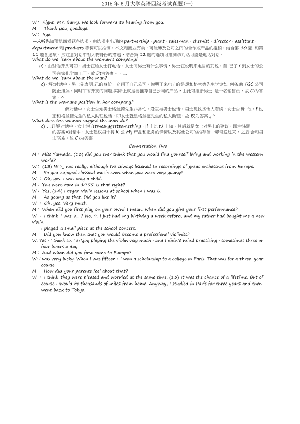
2015 年6 月大学英语四级考试真题(一)
W：Right, Mr. Barry. We look forward to hearing from you.
M ：Thank you, goodbye.
W：Bye.
—未听先知预览四道题各选项，由选项中出现的partnership，plant，salesman，chemist，director，assistant，
department 和products 等词可以推测，本文和商业有关，可能涉及公司之间的合作或产品的推销。结合第10 题和第
11 题各选项，应注意对话中对人物身份的描述，结合第12 题的选项可推测该对话可能是电话对话。
What do we learn about the woman’s company?
D)。由对话开头可知，男士在给女士打电话，女士问男士有什么事情，男士在说明来电目的前说，自己了i 到女士的公
司有家化学加工厂，故D)为答案。，二
What do we learn about the man?
c)。解:对话中，男士先表明_己的身份，介绍了自己公司，说明了来电I 的是想和格兰德先生讨论如何条助TGC 公司
防止泄漏，同时节省开支的问题,实际上就是要推荐自己公司的产品，由此可推断男士是一名销售员，故C)为答
案。^
What is the womans position in her company?
解对话中，女士告知男士格兰德先生非常忙，没空与男士说话，男士想找其他人商谈，女士告诉他，f 也
正和格兰德先生的私人助理说话，即女士就是格兰德先生的私人助理，故B)为答案q ^
What does the woman suggest the man do?
c) , _详解对话中，女士说letmesuggestsomething，|l 丨此tJ 丨知，其后就足女上对男上的建议，即为该题
的答案=对话中，女士建议男十将K 公M'j 产品和服务的详情以及其他公司的推荐倍一卯奇送过来，之后会和男
士联系，故C)为答案
Conversation Two
M：Miss Yamada, (13) did you ever think that you would find yourself living and working in the western
world?
W：(13) N〇w not really, although IVe always listened to recordings of great orchestras from Europe.
M ：So you enjoyed classical music even when you were very young?
W ：Oh, yes. I was only a child.
M：You were bom in 1955. Is that right?
W：Yes, (14) I began violin lessons at school when I was 6.
M ：As young as that. Did you like it?
W ：Oh, yes. Very much.
M：When did you first play on your own? I mean, when did you give your first performance?
W ：I think I was 8... ? No, 9. I just had my birthday a week before, and my father had bought me a new
violin.
I played a small piece at the school concert.
M ：Did you know then that you would become a professional violinist?
W: Yes，I think so. I er\joy playing the violin veiy much，and I didn’t mind practicing，sometimes three or
four hours a day.
M：And when did you first come to Europe?
W: I was very lucky. When I was fifteen，I won a scholarship to a college in Paris. That was for a three-year
course.
M ：How did your parents feel about that?
W ：I think they were pleased and worried at the same time. (15) It was the chance of a lifetime. But of
course I would be thousands of miles from home. Anyway, I studied in Paris for three years and then
went back to Tokyo.
查看 / 复制本页文字
2015 年6 月大学英语四级考试真题(一) W：Right, Mr. Barry. We look forward to hearing from you. M ：Thank you, goodbye. W：Bye. —未听先知预览四道题各选项，由选项中出现的partnership，plant，salesman，chemist，director，assistant， department 和products 等词可以推测，本文和商业有关，可能涉及公司之间的合作或产品的推销。结合第10 题和第 11 题各选项，应注意对话中对人物身份的描述，结合第12 题的选项可推测该对话可能是电话对话。 What do we learn about the woman’s company? D)。由对话开头可知，男士在给女士打电话，女士问男士有什么事情，男士在说明来电目的前说，自己了i 到女士的公 司有家化学加工厂，故D)为答案。，二 What do we learn about the man? c)。解:对话中，男士先表明_己的身份，介绍了自己公司，说明了来电I 的是想和格兰德先生讨论如何条助TGC 公司 防止泄漏，同时节省开支的问题,实际上就是要推荐自己公司的产品，由此可推断男士是一名销售员，故C)为答 案。^ What is the womans position in her company? 解对话中，女士告知男士格兰德先生非常忙，没空与男士说话，男士想找其他人商谈，女士告诉他，f 也 正和格兰德先生的私人助理说话，即女士就是格兰德先生的私人助理，故B)为答案q ^ What does the woman suggest the man do? c) , _详解对话中，女士说letmesuggestsomething，|l 丨此tJ 丨知，其后就足女上对男上的建议，即为该题 的答案=对话中，女士建议男十将K 公M'j 产品和服务的详情以及其他公司的推荐倍一卯奇送过来，之后会和男 士联系，故C)为答案 Conversation Two M：Miss Yamada, (13) did you ever think that you would find yourself living and working in the western world? W：(13) N〇w not really, although IVe always listened to recordings of great orchestras from Europe. M ：So you enjoyed classical music even when you were very young? W ：Oh, yes. I was only a child. M：You were bom in 1955. Is that right? W：Yes, (14) I began violin lessons at school when I was 6. M ：As young as that. Did you like it? W ：Oh, yes. Very much. M：When did you first play on your own? I mean, when did you give your first performance? W ：I think I was 8... ? No, 9. I just had my birthday a week before, and my father had bought me a new violin. I played a small piece at the school concert. M ：Did you know then that you would become a professional violinist? W: Yes，I think so. I er\joy playing the violin veiy much，and I didn’t mind practicing，sometimes three or four hours a day. M：And when did you first come to Europe? W: I was very lucky. When I was fifteen，I won a scholarship to a college in Paris. That was for a three-year course. M ：How did your parents feel about that? W ：I think they were pleased and worried at the same time. (15) It was the chance of a lifetime. But of course I would be thousands of miles from home. Anyway, I studied in Paris for three years and then went back to Tokyo.
第 13 / 25 页
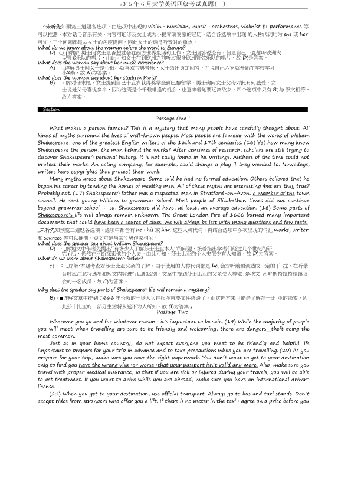
2015 年6 月大学英语四级考试真题(一)
^未听先知预览三道题各选项，由选项中出现的violin，musician, music，orchestras, violinist 和performance 等
可以推测，本对话与音乐有关，内容可能涉及女士成为小提琴演奏家的经历。结合各选项中出现的人称代词均为she 或her
可知，三个问题都是从女士的角度提问，因此女士的话是听音时的重点。
What do we know about the woman before she went to Europe?
D) 〇(瞬解' 男士问女士是否想过会在西方世界生活和工作，女士回答说没有，但是自己一直都听欧洲大
型管€乐队的唱片，由此可知女士在到欧洲之前听过很多欧洲管弦乐队的唱片，故D)是答案。
What does the woman say about her music experience?
A)
。_详解男士问女士是否很小就喜欢古典音乐，女士给出肯定回答，并说自己六岁就开始在学校学习
小¥秦，故A)为答案。
What does the woman say about her study in Paris?
B)
。解对话末尾，女士提到自己十五岁获得奖学金到巴黎留学，男士询问女士父母对此有何感受，女
士说她父母喜忧参半，因为这既是个千载难逢的机会，也意味着她要远离故乡。四个选项中只有B)与原文相符，
故为答案。
Section
Passage One I
What makes a person famous? This is a mystery that many people have carefully thought about. All
kinds of myths surround the lives of well-known people. Most people are familiar with the works of William
Shakespeare, one of the greatest English writers of the 16th and 17th centuries. (16) Yet how many know
Shakespeare the person, the man behind the works? After centimes of research, scholars are still trying to
discover Shakespeare^ personal history. It is not easily found in his writings. Authors of the time could not
protect their works. An acting company, for example, could change a play if they wanted to. Nowadays,
writers have copyrights that protect their work.
Many myths arose about Shakespeare. Some said he had no formal education. Others believed that he
began his career by tending the horses of wealthy men. All of these myths are interesting，but are they true?
Probably not. (17) Shakespeare^ father was a respected man in Stratford-on-Avon, a member of the town
council. He sent young William to grammar school. Most people of Elizabethan times did not continue
beyond grammar school ；so, Shakespeare did have, at least, an average education. (18) Some parts of
Shakespeare’s life will always remain unknown. The Great London Fire of 1666 burned many important
documents that could have been a source of clues. We will aMays be left with many questions and few facts.
_未听先知预览三道题各选项，选项中都含有he，his 或him 这些人称代词，再结合选项中多次出现的词汇works, writer
和sources 等可以推测，短文可能与某位男作家相关。
What does the speaker say about William Shakespeare?
D) 。_解短文中作者先提出“有多少人了解莎士比亚本人”的问题，接着指出学者们经过几个世纪的研
究i 后，仍然在不断探索他的个人史。由此可知，莎士比亚的个人史很少有人知道，故D)为答案。
What do we learn about Shakespeare^ father?
c)。：_序解:本题考查对莎士比亚父亲的了解，由于使用的人称代词都是he,会对听前预测造成一定的干扰，在听录
音时应注意将选项和短文内容进行匹配区别。文章中提到莎士比亚的父亲受人尊敬,是埃文河畔斯特拉特福镇议
会的一名成员，故C)为答案。
Why does the speaker say parts of Shakespeare^ life will remain a mystery?
B)。■详解文章中提到1666 年伦敦的一场大火把很多東要文件烧毁了，而这衅本来可能是了解莎士比亚的线索，因
此莎十比亚的一部分生活将永远不为人所知，故B)为答案3
Passage Two
Wherever you go and for whatever reason，it’s important to be safe. (19) While the majority of people
you will meet when travelling are sure to be friendly and welcoming, there are dangers—theft being the
most common.
Just as in your home country, do not expect everyone you meet to be friendly and helpful. Ifs
important to prepare for your trip in advance and to take precautions while you are travelling. (20) As you
prepare for your trip, make sure you have the right paperwork. You don?t want to get to your destination
only to find you have the wrong visa，or worse，that your passport isn’t valid any more. Also, make sure you
travel with proper medical insurance, so that if you are sick or injured during your travels, you will be able
to get treatment. If you want to drive while you are abroad, make sure you have an international driver^
license.
(21) When you get to your destination, use official transport. Always go to bus and taxi stands. Don’t
accept rides from strangers who offer you a lift. If there is no meter in the taxi，agree on a price before you
查看 / 复制本页文字
2015 年6 月大学英语四级考试真题(一) ^未听先知预览三道题各选项，由选项中出现的violin，musician, music，orchestras, violinist 和performance 等 可以推测，本对话与音乐有关，内容可能涉及女士成为小提琴演奏家的经历。结合各选项中出现的人称代词均为she 或her 可知，三个问题都是从女士的角度提问，因此女士的话是听音时的重点。 What do we know about the woman before she went to Europe? D) 〇(瞬解' 男士问女士是否想过会在西方世界生活和工作，女士回答说没有，但是自己一直都听欧洲大 型管€乐队的唱片，由此可知女士在到欧洲之前听过很多欧洲管弦乐队的唱片，故D)是答案。 What does the woman say about her music experience? A) 。_详解男士问女士是否很小就喜欢古典音乐，女士给出肯定回答，并说自己六岁就开始在学校学习 小¥秦，故A)为答案。 What does the woman say about her study in Paris? B) 。解对话末尾，女士提到自己十五岁获得奖学金到巴黎留学，男士询问女士父母对此有何感受，女 士说她父母喜忧参半，因为这既是个千载难逢的机会，也意味着她要远离故乡。四个选项中只有B)与原文相符， 故为答案。 Section Passage One I What makes a person famous? This is a mystery that many people have carefully thought about. All kinds of myths surround the lives of well-known people. Most people are familiar with the works of William Shakespeare, one of the greatest English writers of the 16th and 17th centuries. (16) Yet how many know Shakespeare the person, the man behind the works? After centimes of research, scholars are still trying to discover Shakespeare^ personal history. It is not easily found in his writings. Authors of the time could not protect their works. An acting company, for example, could change a play if they wanted to. Nowadays, writers have copyrights that protect their work. Many myths arose about Shakespeare. Some said he had no formal education. Others believed that he began his career by tending the horses of wealthy men. All of these myths are interesting，but are they true? Probably not. (17) Shakespeare^ father was a respected man in Stratford-on-Avon, a member of the town council. He sent young William to grammar school. Most people of Elizabethan times did not continue beyond grammar school ；so, Shakespeare did have, at least, an average education. (18) Some parts of Shakespeare’s life will always remain unknown. The Great London Fire of 1666 burned many important documents that could have been a source of clues. We will aMays be left with many questions and few facts. _未听先知预览三道题各选项，选项中都含有he，his 或him 这些人称代词，再结合选项中多次出现的词汇works, writer 和sources 等可以推测，短文可能与某位男作家相关。 What does the speaker say about William Shakespeare? D) 。_解短文中作者先提出“有多少人了解莎士比亚本人”的问题，接着指出学者们经过几个世纪的研 究i 后，仍然在不断探索他的个人史。由此可知，莎士比亚的个人史很少有人知道，故D)为答案。 What do we learn about Shakespeare^ father? c)。：_序解:本题考查对莎士比亚父亲的了解，由于使用的人称代词都是he,会对听前预测造成一定的干扰，在听录 音时应注意将选项和短文内容进行匹配区别。文章中提到莎士比亚的父亲受人尊敬,是埃文河畔斯特拉特福镇议 会的一名成员，故C)为答案。 Why does the speaker say parts of Shakespeare^ life will remain a mystery? B)。■详解文章中提到1666 年伦敦的一场大火把很多東要文件烧毁了，而这衅本来可能是了解莎士比亚的线索，因 此莎十比亚的一部分生活将永远不为人所知，故B)为答案3 Passage Two Wherever you go and for whatever reason，it’s important to be safe. (19) While the majority of people you will meet when travelling are sure to be friendly and welcoming, there are dangers—theft being the most common. Just as in your home country, do not expect everyone you meet to be friendly and helpful. Ifs important to prepare for your trip in advance and to take precautions while you are travelling. (20) As you prepare for your trip, make sure you have the right paperwork. You don?t want to get to your destination only to find you have the wrong visa，or worse，that your passport isn’t valid any more. Also, make sure you travel with proper medical insurance, so that if you are sick or injured during your travels, you will be able to get treatment. If you want to drive while you are abroad, make sure you have an international driver^ license. (21) When you get to your destination, use official transport. Always go to bus and taxi stands. Don’t accept rides from strangers who offer you a lift. If there is no meter in the taxi，agree on a price before you
第 14 / 25 页
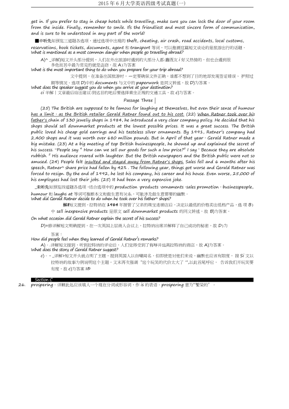
2015 年6 月大学英语四级考试真题(一)
get in. If you prefer to stay in cheap hotels while travelling, make sure you can lock the door of your room
from the inside. Finally, remember to smile. Ifs the friendliest and most sincere form of communication,
and is sure to be understood in any part of the world!
■牵听先知预览三道题各选项，通过选项中出现的theft, cheating, air crash, road accidents, local customs,
reservations, book tickets, documents, agent 和transport 等词，可以推测这篇短文谈论的是旅游出行的话题。
What is mentioned as a most common danger when people go travelling abroad?
A)^ _详解)短文开头部分提到，人们在外出旅游时遇到的大部分人都:蠢既友i 好又热情的，但也会遇到很
多危而其中最为常见的就是盗窃，故A)为答案
What is the most important thing to do when you prepare for your trip abroad?
文中提到，在准备出国旅游时，—定要确保文件正确，谁都不想到了目的地却发现签证错误、护照过
期等情况。选项D)中的documents 与文中的paperwork 是同义转述，故D)为答案。
What does the speaker suggest you do when you arrive at your destination?
ci 羊解丨文章最后给出建议:到达目的地后要选择乘坐正规的交通工具，故c)为答案。
Passage Three |
(25) The British are supposed to be famous for laughing at themselves, but even their sense of humour
has a limit，as the British retailer Gerald Ratner found out to his cost. (22) When Ratner took over his
father’s chain of 130 jeweliy shops in 1984, he introduced a very clear company policy. He decided that his
shops should sell downmarket products at the lowest possible prices. It was a great success. The British
public loved his cheap gold earrings and his tasteless silver ornaments. By 1991, RatnerJs company had
2,400 shops and it was worth over 680 million pounds. But in April of that year，Gerald Ratner made a
big mistake. (23) At a big meeting of top British businesspeople, he showed up and explained the secret of
his success. “People say 4 How can we sell our goods for such a low price?5 I say ' Because they are absolute
rubbish. 5 His audience roared with laughter. But the British newspapers and the British public were not so
amused. (24) People felt insulted and stayed away from Ratner’s shops. Sales fell and 6 months after his
speech, Ratner^ share price had fallen by 42% . The following year, things got worse and Gerald Ratner was
forced to resign. By the end of 1992, he lost his company, his career and his house. Even worse, 25,000 of
his employees had lost their jobs. (25) It had been a very expensive joke.
_未听先知预览四道题各选项，结合选项中的production，products，ornaments，sales promotion，businesspeople,
humour 和laughs at 等词可推断本文和做生意有关系，可能涉及做生意需要的幽默。
What did Gerald Ratner decide to do when he took over his father^ shops?
解$短文提到，拉特纳在1984 年接管了父亲的珠宝连锁店后，决定以最低的价格卖出低档产品，选项B)
中sell inexpensive products 是原文sell downmarket products 的同义转述，故B)为答案。
On what occasion did Gerald Ratner explain the secret of his success?
D)=修详解短文明确提到，在一次英国上层商人会议上，拉特纳出席并解释了自己成功的秘密，故D)为
答案：
How did people feel when they learned of Gerald Ratner?s remarks?
A)。.详解短文提到，听到拉特纳的评论后，人们觉得受到了侮辱并远离拉特纳的商店，故A)为答案。
What does the story of Gerald Ratner suggest?
c)。- _详解>短文开头就点明了主题，提到英国人以自嘲闻名，但即使是对他们来说，幽默也应该有限度，接Si 文以
拉特纳的故事为例说明这个主题，文末再次强调“这个玩笑的代价太大了”,以此首尾呼应，告诉我们开玩笑要
有度，故c)为答案I®
Section C
26.
prospering。详解此处应该填人一个现在分词或形容词，作is 的表语。prospering 意为“繁荣的”。
查看 / 复制本页文字
2015 年6 月大学英语四级考试真题(一) get in. If you prefer to stay in cheap hotels while travelling, make sure you can lock the door of your room from the inside. Finally, remember to smile. Ifs the friendliest and most sincere form of communication, and is sure to be understood in any part of the world! ■牵听先知预览三道题各选项，通过选项中出现的theft, cheating, air crash, road accidents, local customs, reservations, book tickets, documents, agent 和transport 等词，可以推测这篇短文谈论的是旅游出行的话题。 What is mentioned as a most common danger when people go travelling abroad? A)^ _详解)短文开头部分提到，人们在外出旅游时遇到的大部分人都:蠢既友i 好又热情的，但也会遇到很 多危而其中最为常见的就是盗窃，故A)为答案 What is the most important thing to do when you prepare for your trip abroad? 文中提到，在准备出国旅游时，—定要确保文件正确，谁都不想到了目的地却发现签证错误、护照过 期等情况。选项D)中的documents 与文中的paperwork 是同义转述，故D)为答案。 What does the speaker suggest you do when you arrive at your destination? ci 羊解丨文章最后给出建议:到达目的地后要选择乘坐正规的交通工具，故c)为答案。 Passage Three | (25) The British are supposed to be famous for laughing at themselves, but even their sense of humour has a limit，as the British retailer Gerald Ratner found out to his cost. (22) When Ratner took over his father’s chain of 130 jeweliy shops in 1984, he introduced a very clear company policy. He decided that his shops should sell downmarket products at the lowest possible prices. It was a great success. The British public loved his cheap gold earrings and his tasteless silver ornaments. By 1991, RatnerJs company had 2,400 shops and it was worth over 680 million pounds. But in April of that year，Gerald Ratner made a big mistake. (23) At a big meeting of top British businesspeople, he showed up and explained the secret of his success. “People say 4 How can we sell our goods for such a low price?5 I say ' Because they are absolute rubbish. 5 His audience roared with laughter. But the British newspapers and the British public were not so amused. (24) People felt insulted and stayed away from Ratner’s shops. Sales fell and 6 months after his speech, Ratner^ share price had fallen by 42% . The following year, things got worse and Gerald Ratner was forced to resign. By the end of 1992, he lost his company, his career and his house. Even worse, 25,000 of his employees had lost their jobs. (25) It had been a very expensive joke. _未听先知预览四道题各选项，结合选项中的production，products，ornaments，sales promotion，businesspeople, humour 和laughs at 等词可推断本文和做生意有关系，可能涉及做生意需要的幽默。 What did Gerald Ratner decide to do when he took over his father^ shops? 解$短文提到，拉特纳在1984 年接管了父亲的珠宝连锁店后，决定以最低的价格卖出低档产品，选项B) 中sell inexpensive products 是原文sell downmarket products 的同义转述，故B)为答案。 On what occasion did Gerald Ratner explain the secret of his success? D)=修详解短文明确提到，在一次英国上层商人会议上，拉特纳出席并解释了自己成功的秘密，故D)为 答案： How did people feel when they learned of Gerald Ratner?s remarks? A)。.详解短文提到，听到拉特纳的评论后，人们觉得受到了侮辱并远离拉特纳的商店，故A)为答案。 What does the story of Gerald Ratner suggest? c)。- _详解>短文开头就点明了主题，提到英国人以自嘲闻名，但即使是对他们来说，幽默也应该有限度，接Si 文以 拉特纳的故事为例说明这个主题，文末再次强调“这个玩笑的代价太大了”,以此首尾呼应，告诉我们开玩笑要 有度，故c)为答案I® Section C 26. prospering。详解此处应该填人一个现在分词或形容词，作is 的表语。prospering 意为“繁荣的”。
第 15 / 25 页
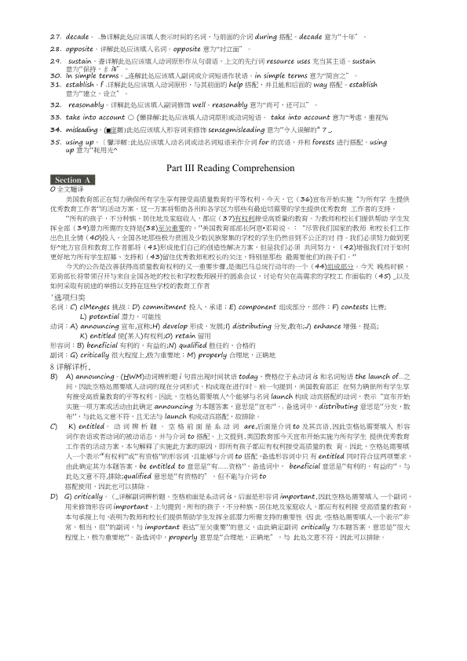
27. decade。.梟详解此处应该填人表示时间的名词，与前面的介词during 搭配。decade 意为“十年”。
28. opposite。详解此处应该填入名词。opposite 意为“对立面”。
29.
sustain。聋详解此处应该填人动词原形作从句谓语，上文的先行词resource uses 充当其主语。sustain
意为“保持，纟i¥”。
30. In simple terms。_连解此处应该填人副词或介词短语作状语。in simple terms 意为“简言之”。
31. establish。f .详解此处应该填入动词原形，与其前面的help 搭配，并且能和后面的way 搭配。establish
意为“建立，设立”。
32.
reasonably。详解此处应该填入副词修饰well。reasonably 意为“尚可，还可以”。
33. take into account 〇(藥择解:此处应该填人动词原形或动词短语。take into account 意为“考虑，重视％
34. misleading。(■痒搌)此处应该填人形容词来修饰sensegmisleading 意为“令人误解的’’ 7 _.
35. using up。〔馨洋解:此处应该填人动名词或动名词短语来作介词for 的宾语，并和forests 进行搭配。using
up 意为“耗用光^
Part III Reading Comprehension
美国教育部正在努力确保所有学生享有接受高质量教育的平等权利。今天，它（36)宣布开始实施“为所有学生提供
优秀教育工作者”的活动方案。这一方案将帮助各州和各学区为那些有最迫切需要的学生提供优秀教育工作者的支持。
“所有的孩子，不分种族、居住地及家庭收入，都应（37)有权利接受高质量的教育。为教师和校长们提供帮助学生发
挥全部（39)潜力所需的支持是(38)至关重要的，”美国教育部部长阿恩•邓肯说。：“尽管我们国家的教师和校长们工作
出色且全情（40)投入，全国各地那些极为贫困及少数民族聚集的学校的学生仍然音到不公正的对待。我们必须努力做到更
好^地方官员和教育工作者都将（41)形成他们自己的创造性解决方案，但是我们必须共同努力，（42)增强我们对于如何
更好地为所有学生招募、支持和（43)留住优秀教师和校长的关注，特别是那些最需要他们的孩子们。”
今天的公告是改善获得高质量教育权利的又一重要步骤,是奥巴马总统行动年的一个（44)组成部分。今天晚些时候，
邓肯部长将带领召开与来自全国各地的校长和学校教师展开的圆桌会议，讨论有关在高需求的学校工作面临的（45) _以及
如何采取有前途的举措以支持在这些学校的教育工作者
'选项归类
名词：C) clMenges 挑战；D) commitment 投入，承诺；E) component 组成部分，部件；F) contests 比赛;
L) potential 潜力，可能性
动词：A) announcing 宣布,宣称;H) develop 形成，发展;I) distributing 分发,散布;J) enhance 增强，提高;
K) entitled 使(某人)有权利;0) retain 留用
形容词：B) beneficial 有利的，有益的;N) qualified 胜任的，合格的
副词：G) critically 很大程度上,极为重要地；M) properly 合理地，正确地
8 详解详析,
B)
A) announcing。(HWM)动词辨析题i 句首出现时间状语today，费格位于系动词is 和名词短语the launch of…之
间，因此空格处需要填人动词的现在分词形式，构成现在进行时。前一句提到，美国教育部正在努力确保所有学生享
有接受高质量教育的平等权利。因此，空格处需要填人^个能够与名词launch 构成动宾搭配的动词，表示“宣布开始
实施一项方案或活动由此确定announcing 为本题答案，意思是“宣布”。. 备选词中，distributing 意思是“分发，散
布”，与此处文意不符，且无法与launch 构成动宾搭配，故排除。
C)
K) entitled。动词辨析题。空格前面是系动词are,后面是介词to 及其宾语,因此空格处需要填人形容
词作表语或者动词的被动语态，并与介词to 搭配。上文提到,美国教育部今天宣布开始实施为所有学生提供优秀教育
工作者的活动方案，本句解释了实施此方案的原因，即所有孩子都应有权利接受高质量的教育。因此，空格处需要填
人一个表示‘¥有权利”或“有资格”的形容词，且能够与介词to 搭配，备选形容词中只有entitled 同时符合这两项要求，
由此确定其为本题答案。be entitled to 意思是“有……资格”。备选词中，beneficial 意思是“有利的，有益的”，与
此处文意不符,排除;qualified 意思是“有资格的”，但不能与介词to
搭配使用，因此也可以排除。
D)
G) critically。（_详解副词辨析题。空格前面是系动词is，后面是形容词important,因此空格处需要填入一个副词，
用来修饰形容词important。上句提到，所有的孩子，不分种族、居住地及家庭收人，都应有权利接受高质量的教育，
本句承接上句，表明为教师和校长们提供帮助学生发挥全部潜力所需支持的重要性。因此，空格处需要填人一个表示“非
常，相当，很”的副词，与important 表达“至关重要”的意义，由此确定副词critically 为本题答案，意思是“很大
程度上，极为重要地”。备选词中，properly 意思是“合理地，正确地”，与此处文意不符，因此可以排除。
O 全文麵译
查看 / 复制本页文字
27. decade。.梟详解此处应该填人表示时间的名词，与前面的介词during 搭配。decade 意为“十年”。 28. opposite。详解此处应该填入名词。opposite 意为“对立面”。 29. sustain。聋详解此处应该填人动词原形作从句谓语，上文的先行词resource uses 充当其主语。sustain 意为“保持，纟i¥”。 30. In simple terms。_连解此处应该填人副词或介词短语作状语。in simple terms 意为“简言之”。 31. establish。f .详解此处应该填入动词原形，与其前面的help 搭配，并且能和后面的way 搭配。establish 意为“建立，设立”。 32. reasonably。详解此处应该填入副词修饰well。reasonably 意为“尚可，还可以”。 33. take into account 〇(藥择解:此处应该填人动词原形或动词短语。take into account 意为“考虑，重视％ 34. misleading。(■痒搌)此处应该填人形容词来修饰sensegmisleading 意为“令人误解的’’ 7 _. 35. using up。〔馨洋解:此处应该填人动名词或动名词短语来作介词for 的宾语，并和forests 进行搭配。using up 意为“耗用光^ Part III Reading Comprehension 美国教育部正在努力确保所有学生享有接受高质量教育的平等权利。今天，它（36)宣布开始实施“为所有学生提供 优秀教育工作者”的活动方案。这一方案将帮助各州和各学区为那些有最迫切需要的学生提供优秀教育工作者的支持。 “所有的孩子，不分种族、居住地及家庭收入，都应（37)有权利接受高质量的教育。为教师和校长们提供帮助学生发 挥全部（39)潜力所需的支持是(38)至关重要的，”美国教育部部长阿恩•邓肯说。：“尽管我们国家的教师和校长们工作 出色且全情（40)投入，全国各地那些极为贫困及少数民族聚集的学校的学生仍然音到不公正的对待。我们必须努力做到更 好^地方官员和教育工作者都将（41)形成他们自己的创造性解决方案，但是我们必须共同努力，（42)增强我们对于如何 更好地为所有学生招募、支持和（43)留住优秀教师和校长的关注，特别是那些最需要他们的孩子们。” 今天的公告是改善获得高质量教育权利的又一重要步骤,是奥巴马总统行动年的一个（44)组成部分。今天晚些时候， 邓肯部长将带领召开与来自全国各地的校长和学校教师展开的圆桌会议，讨论有关在高需求的学校工作面临的（45) _以及 如何采取有前途的举措以支持在这些学校的教育工作者 '选项归类 名词：C) clMenges 挑战；D) commitment 投入，承诺；E) component 组成部分，部件；F) contests 比赛; L) potential 潜力，可能性 动词：A) announcing 宣布,宣称;H) develop 形成，发展;I) distributing 分发,散布;J) enhance 增强，提高; K) entitled 使(某人)有权利;0) retain 留用 形容词：B) beneficial 有利的，有益的;N) qualified 胜任的，合格的 副词：G) critically 很大程度上,极为重要地；M) properly 合理地，正确地 8 详解详析, B) A) announcing。(HWM)动词辨析题i 句首出现时间状语today，费格位于系动词is 和名词短语the launch of…之 间，因此空格处需要填人动词的现在分词形式，构成现在进行时。前一句提到，美国教育部正在努力确保所有学生享 有接受高质量教育的平等权利。因此，空格处需要填人^个能够与名词launch 构成动宾搭配的动词，表示“宣布开始 实施一项方案或活动由此确定announcing 为本题答案，意思是“宣布”。. 备选词中，distributing 意思是“分发，散 布”，与此处文意不符，且无法与launch 构成动宾搭配，故排除。 C) K) entitled。动词辨析题。空格前面是系动词are,后面是介词to 及其宾语,因此空格处需要填人形容 词作表语或者动词的被动语态，并与介词to 搭配。上文提到,美国教育部今天宣布开始实施为所有学生提供优秀教育 工作者的活动方案，本句解释了实施此方案的原因，即所有孩子都应有权利接受高质量的教育。因此，空格处需要填 人一个表示‘¥有权利”或“有资格”的形容词，且能够与介词to 搭配，备选形容词中只有entitled 同时符合这两项要求， 由此确定其为本题答案。be entitled to 意思是“有……资格”。备选词中，beneficial 意思是“有利的，有益的”，与 此处文意不符,排除;qualified 意思是“有资格的”，但不能与介词to 搭配使用，因此也可以排除。 D) G) critically。（_详解副词辨析题。空格前面是系动词is，后面是形容词important,因此空格处需要填入一个副词， 用来修饰形容词important。上句提到，所有的孩子，不分种族、居住地及家庭收人，都应有权利接受高质量的教育， 本句承接上句，表明为教师和校长们提供帮助学生发挥全部潜力所需支持的重要性。因此，空格处需要填人一个表示“非 常，相当，很”的副词，与important 表达“至关重要”的意义，由此确定副词critically 为本题答案，意思是“很大 程度上，极为重要地”。备选词中，properly 意思是“合理地，正确地”，与此处文意不符，因此可以排除。 O 全文麵译
第 16 / 25 页
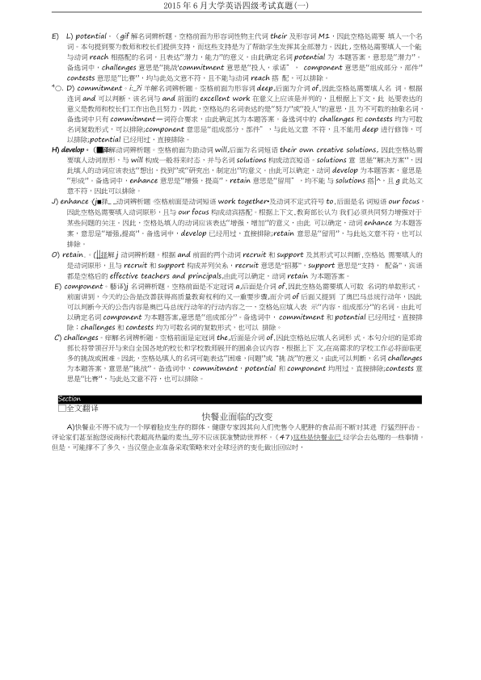
2015 年6 月大学英语四级考试真题(一)
E)
L) potential。（gif 解名词辨析题。空格前面为形容词性物主代词their 及形容词M1，因此空格处需要填人一个名
词。本句提到要为教师和校长们提供支持，而这些支持是为了帮助学生发挥其全部潜力。因此, 空格处需要填人一个能
与动词reach 相搭配的名词，且表达“潜力，能力”的意义，由此确定名词potential 为本题答案，意思是“潜力”。
备选词中，challenges 意思是“挑战'commitment 意思是“投人，承诺”，component 意思是“组成部分，部件”
contests 意思是“比赛”，均与此处文意不符，且不能与动词reach 搭配，可以排除。
4〇. D) commitment。i:_?i 羊解名词辨析题。空格前面为形容词deep,后面为介词of,因此空格处需要填人名词。根据
连词and 可以判断，该名词与and 前面的excellent work 在意义上应该是并列的，且根据上下文，此处要表达的
意义是教师和校长们工作出色且努力。因此，空格处的名词表达的是“努力”或“投人”的意思，且为不可数的抽象名词，
备选词中只有commitment—词符合要求，由此确定其为本题答案。备选词中的challenges 和contests 均为可数
名词复数形式，可以排除;component 意思是“组成部分，部件”，与此处文意不符，且不能用deep 进行修饰，可
以排除;potential 已经用过，直接排除。
H) develop。（■泽解动词辨析题。空格前面为助动词will,后面为名词短语their own creative solutions, 因此空格处需
要填人动词原形，与will 构成一般将来时态，并与名词solutions 构成动宾短语。solutions 意思是“解决方案”，因
此填人的动词应该表达“想出，找到”或“研究出，制定出”的意义。由此可以确定，动词develop 为本题答案，意思是
“形成”。备选词中，enhance 意思是“增强，提高”，retain 意思是“留用”，均不能与solutions 搭|^，且g 此处文
意不符，因此可以排除。
J) enhance。(j■择_ _动词辨析题。空格前面是动词短语work together•及动词不定式符号to,后面是名词短语our focus，
因此空格处需要填人动词原形，且与our focus 构成动宾搭配。根据上下文,教育部长认为我们必须共同努力增强对于
某些问题的关注。因此，空格处填人的动词应该表达“增强，增加”的意义，由此可以确定，动词enhance 为本题答
案，意思是“增强,提高”。备选词中，develop 已经用过，直接排除;retain 意思是“留用”，与此处文意不符，也可以
排除。
O) retain.。(||择解j 动词辨析题。根据and 前面的两个动词recruit 和support 及其形式可以判断,空格处需要填人的
是动词原形，且与recruit 和support 构成并列关系，recruit 意思是“招募”，support 意思是“支持，配备”，宾语
都是空格后的effective teachers and principals,由此可以确定，动词retain 为本题答案。
E) component。藝译)j 名词辨析题。空格前面是不定冠词a,后面是介词of,因此空格处需要填人可数名词的单数形式。
前面讲到，今天的公告是改善获得高质量教育权利的又一重要步骤,而介词of 后面又提到了奥巴马总统行动年，因此
可以判断今天的公告内容是奥巴马总统行动年的行动内容之一，空格处应填入表示“内容，组成部分”的名词。由此可
以确定名词component 为本题答案,意思是“组成部分”。备选词中，commitment 和potential 已经用过，直接排
除；challenges 和contests 均为可数名词的复数形式，也可以排除。
C) challenges。痒解名词辨析题。空格前面是定冠词the,后面是介词of,因此空格处应填人名词形式。本句介绍的是邓肯
部长将带领召开与来自全国各地的校长和学校教师展开的圆桌会议内容，根据上下文,在高需求的学校工作必将面临更
多的挑战或困难。因此，空格处填人的名词可能表达“困难，问题”或“挑战”的意义，由此可以判断，名词challenges
为本题答案，意思是“挑战”。备选词中，commitment，potential 和component 均用过，直接排除;contests 意
思是“比赛”，与此处文意不符，也可以排除。
Section
□全文翻译
快餐业面临的改变
A)快餐业不得不成为一个厚着脸皮生存的群体。健康专家因其向人们兜售令人肥胖的食品而不断对其进行猛烈抨击。
评论家们甚至抱怨说商标代表超高热量的麦当_劳不应该获准赞助世界杯。（47)这些是快餐业已经学会去处理的一些事情。
但是，可能撑不了多久。当汉堡企业准备采取策略来对全球经济的变化做出回应时，
查看 / 复制本页文字
2015 年6 月大学英语四级考试真题(一) E) L) potential。（gif 解名词辨析题。空格前面为形容词性物主代词their 及形容词M1，因此空格处需要填人一个名 词。本句提到要为教师和校长们提供支持，而这些支持是为了帮助学生发挥其全部潜力。因此, 空格处需要填人一个能 与动词reach 相搭配的名词，且表达“潜力，能力”的意义，由此确定名词potential 为本题答案，意思是“潜力”。 备选词中，challenges 意思是“挑战'commitment 意思是“投人，承诺”，component 意思是“组成部分，部件” contests 意思是“比赛”，均与此处文意不符，且不能与动词reach 搭配，可以排除。 4〇. D) commitment。i:_?i 羊解名词辨析题。空格前面为形容词deep,后面为介词of,因此空格处需要填人名词。根据 连词and 可以判断，该名词与and 前面的excellent work 在意义上应该是并列的，且根据上下文，此处要表达的 意义是教师和校长们工作出色且努力。因此，空格处的名词表达的是“努力”或“投人”的意思，且为不可数的抽象名词， 备选词中只有commitment—词符合要求，由此确定其为本题答案。备选词中的challenges 和contests 均为可数 名词复数形式，可以排除;component 意思是“组成部分，部件”，与此处文意不符，且不能用deep 进行修饰，可 以排除;potential 已经用过，直接排除。 H) develop。（■泽解动词辨析题。空格前面为助动词will,后面为名词短语their own creative solutions, 因此空格处需 要填人动词原形，与will 构成一般将来时态，并与名词solutions 构成动宾短语。solutions 意思是“解决方案”，因 此填人的动词应该表达“想出，找到”或“研究出，制定出”的意义。由此可以确定，动词develop 为本题答案，意思是 “形成”。备选词中，enhance 意思是“增强，提高”，retain 意思是“留用”，均不能与solutions 搭|^，且g 此处文 意不符，因此可以排除。 J) enhance。(j■择_ _动词辨析题。空格前面是动词短语work together•及动词不定式符号to,后面是名词短语our focus， 因此空格处需要填人动词原形，且与our focus 构成动宾搭配。根据上下文,教育部长认为我们必须共同努力增强对于 某些问题的关注。因此，空格处填人的动词应该表达“增强，增加”的意义，由此可以确定，动词enhance 为本题答 案，意思是“增强,提高”。备选词中，develop 已经用过，直接排除;retain 意思是“留用”，与此处文意不符，也可以 排除。 O) retain.。(||择解j 动词辨析题。根据and 前面的两个动词recruit 和support 及其形式可以判断,空格处需要填人的 是动词原形，且与recruit 和support 构成并列关系，recruit 意思是“招募”，support 意思是“支持，配备”，宾语 都是空格后的effective teachers and principals,由此可以确定，动词retain 为本题答案。 E) component。藝译)j 名词辨析题。空格前面是不定冠词a,后面是介词of,因此空格处需要填人可数名词的单数形式。 前面讲到，今天的公告是改善获得高质量教育权利的又一重要步骤,而介词of 后面又提到了奥巴马总统行动年，因此 可以判断今天的公告内容是奥巴马总统行动年的行动内容之一，空格处应填入表示“内容，组成部分”的名词。由此可 以确定名词component 为本题答案,意思是“组成部分”。备选词中，commitment 和potential 已经用过，直接排 除；challenges 和contests 均为可数名词的复数形式，也可以排除。 C) challenges。痒解名词辨析题。空格前面是定冠词the,后面是介词of,因此空格处应填人名词形式。本句介绍的是邓肯 部长将带领召开与来自全国各地的校长和学校教师展开的圆桌会议内容，根据上下文,在高需求的学校工作必将面临更 多的挑战或困难。因此，空格处填人的名词可能表达“困难，问题”或“挑战”的意义，由此可以判断，名词challenges 为本题答案，意思是“挑战”。备选词中，commitment，potential 和component 均用过，直接排除;contests 意 思是“比赛”，与此处文意不符，也可以排除。 Section □全文翻译 快餐业面临的改变 A)快餐业不得不成为一个厚着脸皮生存的群体。健康专家因其向人们兜售令人肥胖的食品而不断对其进行猛烈抨击。 评论家们甚至抱怨说商标代表超高热量的麦当_劳不应该获准赞助世界杯。（47)这些是快餐业已经学会去处理的一些事情。 但是，可能撑不了多久。当汉堡企业准备采取策略来对全球经济的变化做出回应时，
第 17 / 25 页

2015 年6 月大学英语四级考试真题(一)
B 详解详析
46. Some people propose laws be made
to stop McDonald's from attaching
toys to its food specials for
还面临着来自监管部门更多的压力。
快餐曾经被认为可以抵抗经济衰退〇(50)逻辑上，当消费者要削减开支时，巨无霸和皇堡等便宜的食物会变得更有
吸引力。在最近的经济衰退中，当快餐商家留住了那些在休闲餐馆也付不起钱的消费者时，这样的“降级消费”得以证明。
在美国，这个快餐的发源地，伴随着快餐业的打折活动以及促销活动，例如推出1 美元菜单和便宜的什锦饭，快餐店客流
也变得兴旺起来。
结果，快餐连锁企业比那些贵一点的同行们更好地度过了这次经济危机。在2009 年美国提供全方位服务的餐馆的
营业额与以前同期相比有超过6%的降幅，但是快餐连锁企业的营业额却依然保持不变。其他国家的市场，如曰本、法国和
英国，在快餐上的整体消费呈增长态势。在美国同行业的营业额中，世界上最大的快餐企业麦当劳在没有下滑的情况下度
过了经济衰退期。以其新鲜原料闻名的美国快餐连锁店帕尼罗面包同样表现良好，因为它以比饭店低廉的价格提供了更高
质量的食品。
但并非所有的快餐企业都如此幸运。诸如汉堡王等许多企业的营业额就有所下滑。（51)在经济衰退的严峻时期，尽
管一些人降级消费转向快餐，但许多人为了省钱而更频繁地在家里吃饭。瑞士联合银行的分析师大卫.帕尔曼表示，在美国，
一些小型的快餐连锁店，如玩偶匣和卡乐星，在这次经济衰退中受到了特别严重的冲击，因为它们要与麦当劳这样的全球性
快餐巨头进行竞争。去年，在其他企业都减少广告投入的情况下，麦当劳在广告宣传上的投入却增加了7%多。
—些快餐企业还不惜牺牲自己的利润试图给顾客们更好的优惠。（52)在经济衰退期间，很多商家采取低价策略，他
们期望一旦吸引顾客进门，就能够劝说他们购买梢贵的产品。但在多数情况下，这种策略并不^ 效。去年，汉堡王的特许经
销商就因为双层奶酪汉堡的促销活动而起诉该公司，声称以1 美元出售这些成本价^ 1.10 美元的产品对他们来说是不公平
的。五月份法官裁决表示支持汉堡王。尽管如此，这家公司可能还是要咒骂其做出的促销便宜菜品而不是更高价菜品的决
定，因为这些“实惠菜单”上的菜品在销售总额中所占的比例从去年10 月的12%上升到了现在的20% ^
(54)分析人士对今年快餐业的适度增长有所期待。但是衰退的形势促使商家重新考虑他们的策略。现在许多商家推出
一些价格稍高的商品试图将消费者从1 美元的特价商品中吸引回来。拥有塔可钟和必胜客的百胜餐饮集团的旗下品牌肯德
基已经推出了一款售价约5 美元的鸡肉三明治。五月份汉堡王推出了7 美元八个的烤猪排。
许多快餐企业也试图让消费者购买包括饮料在内的更多新产品。麦当劳开始销售更优质的咖啡作为对星巴克的挑战。
它的“麦克咖啡”系列在美国本土的销售量约占6%。（48)星巴克已经将它的西雅图最好咖■# 的品牌版权出售给了汉堡王，
该咖啡将在今年晚些时候开始销售。
因为销售策略从“大尺寸”向“更多买家”转变，快餐商家需要维持一天的高客流量。(53)许多商家看到了早餐市场的
巨大商机，而不是仅仅出售高脂肪的食物。麦当劳明年将在美国销售粥类食物。伯恩斯坦调查公司的分析师莎拉•塞纳托尔
表示，早餐市场具有很好的赚钱潜力，因为其利润相当高。快餐商家也在增加中午和夜晚小吃的种类，例如混合型饮料及
包装食品。其想法是，通过在菜单上涵盖更广的范围，“我们可以卖给消费者他们一整天都需要的食物，”百胜集团首席财
务官瑞克•卡如茨说道。
但是那些越长越粗的腰围怎么办呢？到目前为止，快餐企业已经聪明地避开了政府的监管。（49)通过提供一些健康
的选择，像沙拉和低热量的三明治，这些企业至少给人们留下了采取行动帮助对抗肥胖的印象。提供的这些东西未必是亏
本特卖品，因为它们增强了廉价食品店对食客群体，包括不想吃汉堡的人们的吸引力。但是消费者不能被强制点沙拉来代
替薯条。
在未来，简单提供一些健康的可供选择的食品可能是不够的。“每一个我所了解的包装食品和餐馆企业现在都在关心
法律规定，”瑞银集团的帕尔曼先生表示。（55)今年美国国会通过的健康改革法案要求拥有20 家及以上连锁店的餐馆将
它们所供应的食品卡路里含量印制在菜单上。一项由美国国家经济研究局开展的对2007 年在纽约推出的相似热量张贴法
案对星巴克的影响跟踪调查发现,在旁边有唐恩都乐连锁店的情况下，星巴克每次交易中的平均热量值减少了6% ,而收益
增长了3% ■——也就是说，这些菜单标签有助于这些连锁企业提供更健康的菜品。
为了避免与美国和其他地方的法规起冲突，快餐企业将不得不继续创新。麦当劳的沃特■瑞克宣称其公司已经对菜单
进行了改良，这意味着麦当劳与几年前相比会提供更多健康的食品。“与世界上的其他餐饮企业相比，我们可能会销售更
多的蔬菜、更多的牛奶、更多的沙拉以及更多的苹果他说道。（46)但是加利福尼亚州的一个小镇最近提出一项议案，即
禁止麦当劳在其高热量的“快乐套餐”中附赠玩具，因为立法者们认为这会引诱孩子们去吃不健康的食物，这表明还有更多
事情等着快餐企业去做。
K) In order to avoid other legislation in America and elsewhere,
fast-food companies will have to continue innovating (仓!J 新）•
Walt Riker of McDonald’s claims the change it has made
查看 / 复制本页文字
2015 年6 月大学英语四级考试真题(一) B 详解详析 46. Some people propose laws be made to stop McDonald's from attaching toys to its food specials for 还面临着来自监管部门更多的压力。 快餐曾经被认为可以抵抗经济衰退〇(50)逻辑上，当消费者要削减开支时，巨无霸和皇堡等便宜的食物会变得更有 吸引力。在最近的经济衰退中，当快餐商家留住了那些在休闲餐馆也付不起钱的消费者时，这样的“降级消费”得以证明。 在美国，这个快餐的发源地，伴随着快餐业的打折活动以及促销活动，例如推出1 美元菜单和便宜的什锦饭，快餐店客流 也变得兴旺起来。 结果，快餐连锁企业比那些贵一点的同行们更好地度过了这次经济危机。在2009 年美国提供全方位服务的餐馆的 营业额与以前同期相比有超过6%的降幅，但是快餐连锁企业的营业额却依然保持不变。其他国家的市场，如曰本、法国和 英国，在快餐上的整体消费呈增长态势。在美国同行业的营业额中，世界上最大的快餐企业麦当劳在没有下滑的情况下度 过了经济衰退期。以其新鲜原料闻名的美国快餐连锁店帕尼罗面包同样表现良好，因为它以比饭店低廉的价格提供了更高 质量的食品。 但并非所有的快餐企业都如此幸运。诸如汉堡王等许多企业的营业额就有所下滑。（51)在经济衰退的严峻时期，尽 管一些人降级消费转向快餐，但许多人为了省钱而更频繁地在家里吃饭。瑞士联合银行的分析师大卫.帕尔曼表示，在美国， 一些小型的快餐连锁店，如玩偶匣和卡乐星，在这次经济衰退中受到了特别严重的冲击，因为它们要与麦当劳这样的全球性 快餐巨头进行竞争。去年，在其他企业都减少广告投入的情况下，麦当劳在广告宣传上的投入却增加了7%多。 —些快餐企业还不惜牺牲自己的利润试图给顾客们更好的优惠。（52)在经济衰退期间，很多商家采取低价策略，他 们期望一旦吸引顾客进门，就能够劝说他们购买梢贵的产品。但在多数情况下，这种策略并不^ 效。去年，汉堡王的特许经 销商就因为双层奶酪汉堡的促销活动而起诉该公司，声称以1 美元出售这些成本价^ 1.10 美元的产品对他们来说是不公平 的。五月份法官裁决表示支持汉堡王。尽管如此，这家公司可能还是要咒骂其做出的促销便宜菜品而不是更高价菜品的决 定，因为这些“实惠菜单”上的菜品在销售总额中所占的比例从去年10 月的12%上升到了现在的20% ^ (54)分析人士对今年快餐业的适度增长有所期待。但是衰退的形势促使商家重新考虑他们的策略。现在许多商家推出 一些价格稍高的商品试图将消费者从1 美元的特价商品中吸引回来。拥有塔可钟和必胜客的百胜餐饮集团的旗下品牌肯德 基已经推出了一款售价约5 美元的鸡肉三明治。五月份汉堡王推出了7 美元八个的烤猪排。 许多快餐企业也试图让消费者购买包括饮料在内的更多新产品。麦当劳开始销售更优质的咖啡作为对星巴克的挑战。 它的“麦克咖啡”系列在美国本土的销售量约占6%。（48)星巴克已经将它的西雅图最好咖■# 的品牌版权出售给了汉堡王， 该咖啡将在今年晚些时候开始销售。 因为销售策略从“大尺寸”向“更多买家”转变，快餐商家需要维持一天的高客流量。(53)许多商家看到了早餐市场的 巨大商机，而不是仅仅出售高脂肪的食物。麦当劳明年将在美国销售粥类食物。伯恩斯坦调查公司的分析师莎拉•塞纳托尔 表示，早餐市场具有很好的赚钱潜力，因为其利润相当高。快餐商家也在增加中午和夜晚小吃的种类，例如混合型饮料及 包装食品。其想法是，通过在菜单上涵盖更广的范围，“我们可以卖给消费者他们一整天都需要的食物，”百胜集团首席财 务官瑞克•卡如茨说道。 但是那些越长越粗的腰围怎么办呢？到目前为止，快餐企业已经聪明地避开了政府的监管。（49)通过提供一些健康 的选择，像沙拉和低热量的三明治，这些企业至少给人们留下了采取行动帮助对抗肥胖的印象。提供的这些东西未必是亏 本特卖品，因为它们增强了廉价食品店对食客群体，包括不想吃汉堡的人们的吸引力。但是消费者不能被强制点沙拉来代 替薯条。 在未来，简单提供一些健康的可供选择的食品可能是不够的。“每一个我所了解的包装食品和餐馆企业现在都在关心 法律规定，”瑞银集团的帕尔曼先生表示。（55)今年美国国会通过的健康改革法案要求拥有20 家及以上连锁店的餐馆将 它们所供应的食品卡路里含量印制在菜单上。一项由美国国家经济研究局开展的对2007 年在纽约推出的相似热量张贴法 案对星巴克的影响跟踪调查发现,在旁边有唐恩都乐连锁店的情况下，星巴克每次交易中的平均热量值减少了6% ,而收益 增长了3% ■——也就是说，这些菜单标签有助于这些连锁企业提供更健康的菜品。 为了避免与美国和其他地方的法规起冲突，快餐企业将不得不继续创新。麦当劳的沃特■瑞克宣称其公司已经对菜单 进行了改良，这意味着麦当劳与几年前相比会提供更多健康的食品。“与世界上的其他餐饮企业相比，我们可能会销售更 多的蔬菜、更多的牛奶、更多的沙拉以及更多的苹果他说道。（46)但是加利福尼亚州的一个小镇最近提出一项议案，即 禁止麦当劳在其高热量的“快乐套餐”中附赠玩具，因为立法者们认为这会引诱孩子们去吃不健康的食物，这表明还有更多 事情等着快餐企业去做。 K) In order to avoid other legislation in America and elsewhere, fast-food companies will have to continue innovating (仓!J 新）• Walt Riker of McDonald’s claims the change it has made
第 18 / 25 页
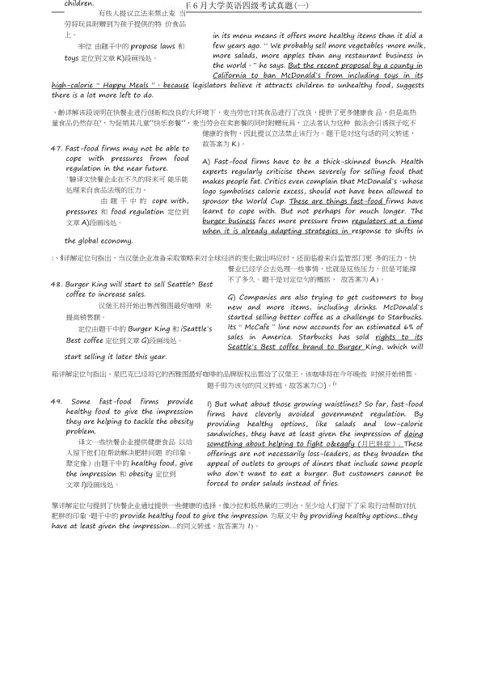
2015 年6 月大学英语四级考试真题(一)
children.
有些人提议立法来禁止麦当
劳将玩具附赠到为孩子提供的特价食品
上。
率位由题干中的propose laws 和
toys 定位到文章K)段画线处。
47. Fast-food firms may not be able to
cope
with
pressures
from
food
regulation in the near future.
'驗译文快餐企业在不久的将来可能乐能
处理来自食品法规的压力。
由题干中的
cope with,
pressures 和food regulation 定位到
文章A)段画线处。
48. Burger King will start to sell Seattle^ Best
coffee to increase sales.
汉堡王将开始出售西雅图最好咖啡来
提高销售额。
定位由题干中的Burger King 和iSeattle’s
Best coffee 定位到文章G)段画线处。
49.
Some
fast-food
firms
provide
healthy food to give the impression
they are helping to tackle the obesity
problem.
译文一些快餐企业提供健康食品以给
人留下他们在帮助解决肥胖问题的印象。
犛定像）由题干中的healthy food, give
the impression 和obesity 定位到
文章I)段画线处。
in its menu means it offers more healthy items than it did a
few years ago. ‘‘ We probably sell more vegetables，more milk,
more salads, more apples than any restaurant business in
the world，” he says. But the recent proposal by a county in
California to ban McDonald’s from including toys in its
high-calorie “ Happy Meals ”，because legislators believe it attracts children to unhealthy food, suggests
there is a lot more left to do.
、齡详解该段说明在快餐业进行创新和改良的大环境下，麦当劳也对其食品进行了改良，提供了更多健康食品，但是高热
量食品仍然存在'，为促销其儿童“快乐套餐”，麦当劳会在卖套餐的同时附赠玩具，立法者认为这种做法会引诱孩子吃不
健康的食物，因此提议立法禁止该行为。题干是对这句话的同义转述，
故答案为K)。
A) Fast-food firms have to be a thick-skinned bunch. Health
experts regularly criticise them severely for selling food that
makes people fat. Critics even complain that McDonald’s，whose
logo symbolises calorie excess, should not have been allowed to
sponsor the World Cup. These are things fast-food firms have
learnt to cope with. But not perhaps for much longer. The
burger business faces more pressure from regulators at a time
when it is already adapting strategies in response to shifts in
the global economy.
:、§详解定位句指出，当汉堡企业准备采取策略来对全球经济的变化做出吗应时，还面临着来自监管部门更多的压力，快
餐业已经学会去处理一些事情，也就是这些压力，但是可能撑
不了多久。题干是对定位句的概括，故答案为A)。
G) Companies are also trying to get customers to buy
new
and
more
items,
including
drinks.
McDonald’s
started selling better coffee as a challenge to Starbucks.
Its “ McCafe ” line now accounts for an estimated 6% of
sales
in
America.
Starbucks
has
sold
rights
to
its
Seattle’s Best coffee brand to Burger King, which will
start selling it later this year.
箱详解定位句指出，星巴克已经将它的西雅图最好咖啡的品牌版权出售给了汉堡王，该咖啡将在今年晚些时候开始销售。
题千即为该句的同义转述，故答案为〇)。('
I) But what about those growing waistlines? So far, fast-food
firms
have
cleverly
avoided
government
regulation.
By
providing
healthy
options,
like
salads
and
low-calorie
sandwiches, they have at least given the impression of doing
something about helping to fight o&eggfy (月巴胖症）. These
offerings are not necessarily loss-leaders, as they broaden the
appeal of outlets to groups of diners that include some people
who don’t want to eat a burger. But customers cannot be
forced to order salads instead of fries.
擎详解定位句提到了快餐企业通过提供一些健康的选择，像沙拉和低热量的三明治，至少给人们留下了采取行动帮助对抗
肥胖的印象。题干中的provide healthy food to give the impression 为原文中by providing healthy options...they
have at least given the impression…的同义转述，故答案为I)。
查看 / 复制本页文字
2015 年6 月大学英语四级考试真题(一)
children.
有些人提议立法来禁止麦当
劳将玩具附赠到为孩子提供的特价食品
上。
率位由题干中的propose laws 和
toys 定位到文章K)段画线处。
47. Fast-food firms may not be able to
cope
with
pressures
from
food
regulation in the near future.
'驗译文快餐企业在不久的将来可能乐能
处理来自食品法规的压力。
由题干中的
cope with,
pressures 和food regulation 定位到
文章A)段画线处。
48. Burger King will start to sell Seattle^ Best
coffee to increase sales.
汉堡王将开始出售西雅图最好咖啡来
提高销售额。
定位由题干中的Burger King 和iSeattle’s
Best coffee 定位到文章G)段画线处。
49.
Some
fast-food
firms
provide
healthy food to give the impression
they are helping to tackle the obesity
problem.
译文一些快餐企业提供健康食品以给
人留下他们在帮助解决肥胖问题的印象。
犛定像）由题干中的healthy food, give
the impression 和obesity 定位到
文章I)段画线处。
in its menu means it offers more healthy items than it did a
few years ago. ‘‘ We probably sell more vegetables，more milk,
more salads, more apples than any restaurant business in
the world，” he says. But the recent proposal by a county in
California to ban McDonald’s from including toys in its
high-calorie “ Happy Meals ”，because legislators believe it attracts children to unhealthy food, suggests
there is a lot more left to do.
、齡详解该段说明在快餐业进行创新和改良的大环境下，麦当劳也对其食品进行了改良，提供了更多健康食品，但是高热
量食品仍然存在'，为促销其儿童“快乐套餐”，麦当劳会在卖套餐的同时附赠玩具，立法者认为这种做法会引诱孩子吃不
健康的食物，因此提议立法禁止该行为。题干是对这句话的同义转述，
故答案为K)。
A) Fast-food firms have to be a thick-skinned bunch. Health
experts regularly criticise them severely for selling food that
makes people fat. Critics even complain that McDonald’s，whose
logo symbolises calorie excess, should not have been allowed to
sponsor the World Cup. These are things fast-food firms have
learnt to cope with. But not perhaps for much longer. The
burger business faces more pressure from regulators at a time
when it is already adapting strategies in response to shifts in
the global economy.
:、§详解定位句指出，当汉堡企业准备采取策略来对全球经济的变化做出吗应时，还面临着来自监管部门更多的压力，快
餐业已经学会去处理一些事情，也就是这些压力，但是可能撑
不了多久。题干是对定位句的概括，故答案为A)。
G) Companies are also trying to get customers to buy
new
and
more
items,
including
drinks.
McDonald’s
started selling better coffee as a challenge to Starbucks.
Its “ McCafe ” line now accounts for an estimated 6% of
sales
in
America.
Starbucks
has
sold
rights
to
its
Seattle’s Best coffee brand to Burger King, which will
start selling it later this year.
箱详解定位句指出，星巴克已经将它的西雅图最好咖啡的品牌版权出售给了汉堡王，该咖啡将在今年晚些时候开始销售。
题千即为该句的同义转述，故答案为〇)。('
I) But what about those growing waistlines? So far, fast-food
firms
have
cleverly
avoided
government
regulation.
By
providing
healthy
options,
like
salads
and
low-calorie
sandwiches, they have at least given the impression of doing
something about helping to fight o&eggfy (月巴胖症）. These
offerings are not necessarily loss-leaders, as they broaden the
appeal of outlets to groups of diners that include some people
who don’t want to eat a burger. But customers cannot be
forced to order salads instead of fries.
擎详解定位句提到了快餐企业通过提供一些健康的选择，像沙拉和低热量的三明治，至少给人们留下了采取行动帮助对抗
肥胖的印象。题干中的provide healthy food to give the impression 为原文中by providing healthy options...they
have at least given the impression…的同义转述，故答案为I)。
第 19 / 25 页
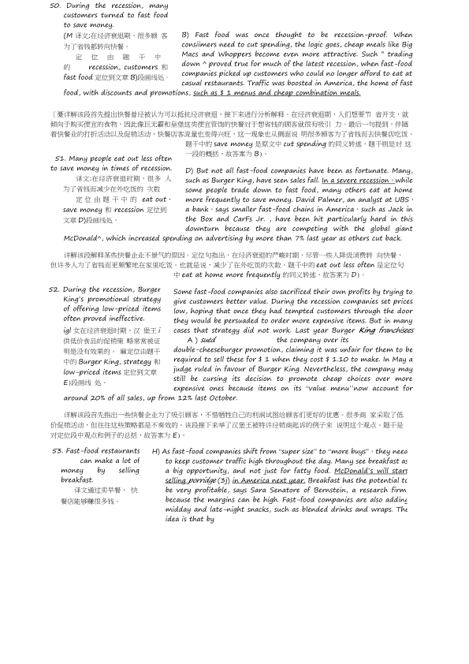
50.
During
the
recession,
many
customers turned to fast food
to save money.
(M 译文;在经济衰退期，很多顾客
为了省钱都转向快餐。
定
位
由
题
干
中
的
recession, customers 和
fast food 定位到文章B)段画线处。
51. Many people eat out less often
to save money in times of recession.
译文:在经济衰退时期，很多人
为了省钱而减少在外吃饭的次数
定位由题干中的eat out，
save money 和recession 定位到
文章D)段画线处。
52. During the recession, Burger
King’s promotional strategy
of offering low-priced items
often proved ineffective.
igl 女在经济衰退时期，汉堡王i
供低价食品的促销策略常常被证
明是没有效果的。麻定位由题干
中的Burger King, strategy 和
low-priced items 定位到文章
E)段画线处。
53. Fast-food restaurants
can make a lot of
money
by
selling
breakfast.
译文通过卖早餐，快
餐店能够赚很多钱。
H) As fast-food companies shift from “super size” to “more buys”，they need
to keep customer traffic high throughout the day. Many see breakfast as
a big opportunity, and not just for fatty food. McDonald’s will start
selling porridge (3j) in America next year. Breakfast has the potential to
be very profitable, says Sara Senatore of Bernstein, a research firm,
because the margins can be high. Fast-food companies are also adding
midday and late-night snacks, such as blended drinks and wraps. The
idea is that by
B)
Fast
food
was
once
thought
to
be
recession-proof.
When
consiimers need to cut spending, the logic goes, cheap meals like Big
Macs and Whoppers become even more attractive. Such
u trading
down ^ proved true for much of the latest recession, when fast-food
companies picked up customers who could no longer afford to eat at
casual restaurants. Traffic was boosted in America, the home of fast
food, with discounts and promotions, such as $ 1 menus and cheap combination meals.
〔憂详解该段首先提出快餐曾经被认为可以抵抗经济衰退，接下来进行分析解释。在经济衰退期，人们想要节省开支，就
倾向于购买便宜的食物，因此像巨无霸和皇堡这类便宜管饱的快餐对于想省钱的顾客就很有吸引力。最后一句提到，伴随
着快餐业的打折活动以及促销活动，快餐店客流量也变得兴旺，这一现象也从侧面说明很多顾客为了省钱而去快餐店吃饭。
题干中的save money 是原文中cut spending 的同义转述，题干则是对这
一段的概括，故答案为B)。
D) But not all fast-food companies have been as fortunate. Many,
such as Burger King, have seen sales fall. In a severe recession，while
some people trade down to fast food, many others eat at home
more frequently to save money. David Palmer, an analyst at UBS，
a bank，says smaller fast-food chains in America，such as Jack in
the Box and CarFs Jr. , have been hit particularly hard in this
downturn
because
they
are
competing
with
the
global
giant
McDonald^, which increased spending on advertising by more than 7% last year as others cut back.
详解该段解释某些快餐企业不景气的原因。定位句指出，在经济衰退的严峻时期，尽管一些人降级消费转向快餐，
但许多人为了省钱而更频繁地在家里吃饭。也就是说，减少了在外吃饭的次数。题干中的eat out less often 是定位句
中eat at home more frequently 的同义转述，故答案为D)。
Some fast-food companies also sacrificed their own profits by trying to
give customers better value. During the recession companies set prices
low, hoping that once they had tempted customers through the door
they would be persuaded to order more expensive items. But in many
cases that strategy did not work. Last year Burger King franchisees
A ) sued
the company over its
double-cheeseburger promotion, claiming it was unfair for them to be
required to sell these for $ 1 when they cost $ 1.10 to make. In May a
judge ruled in favour of Burger King. Nevertheless, the company may
still be cursing its decision to promote cheap choices over more
expensive ones because items on its “value menu’’now account for
around 20% of all sales, up from 12% last October.
详解该段首先指出一些快餐企业为了吸引顾客，不惜牺牲自己的利润试图给顾客们更好的优惠。很多商家采取了低
价促销活动，但往往这些策略都是不奏效的。该段接下来举了汉堡王被特许经销商起诉的例子来说明这个观点。题干是
对定位段中观点和例子的总括，故答案为E)。
查看 / 复制本页文字
50. During the recession, many customers turned to fast food to save money. (M 译文;在经济衰退期，很多顾客 为了省钱都转向快餐。 定 位 由 题 干 中 的 recession, customers 和 fast food 定位到文章B)段画线处。 51. Many people eat out less often to save money in times of recession. 译文:在经济衰退时期，很多人 为了省钱而减少在外吃饭的次数 定位由题干中的eat out， save money 和recession 定位到 文章D)段画线处。 52. During the recession, Burger King’s promotional strategy of offering low-priced items often proved ineffective. igl 女在经济衰退时期，汉堡王i 供低价食品的促销策略常常被证 明是没有效果的。麻定位由题干 中的Burger King, strategy 和 low-priced items 定位到文章 E)段画线处。 53. Fast-food restaurants can make a lot of money by selling breakfast. 译文通过卖早餐，快 餐店能够赚很多钱。 H) As fast-food companies shift from “super size” to “more buys”，they need to keep customer traffic high throughout the day. Many see breakfast as a big opportunity, and not just for fatty food. McDonald’s will start selling porridge (3j) in America next year. Breakfast has the potential to be very profitable, says Sara Senatore of Bernstein, a research firm, because the margins can be high. Fast-food companies are also adding midday and late-night snacks, such as blended drinks and wraps. The idea is that by B) Fast food was once thought to be recession-proof. When consiimers need to cut spending, the logic goes, cheap meals like Big Macs and Whoppers become even more attractive. Such u trading down ^ proved true for much of the latest recession, when fast-food companies picked up customers who could no longer afford to eat at casual restaurants. Traffic was boosted in America, the home of fast food, with discounts and promotions, such as $ 1 menus and cheap combination meals. 〔憂详解该段首先提出快餐曾经被认为可以抵抗经济衰退，接下来进行分析解释。在经济衰退期，人们想要节省开支，就 倾向于购买便宜的食物，因此像巨无霸和皇堡这类便宜管饱的快餐对于想省钱的顾客就很有吸引力。最后一句提到，伴随 着快餐业的打折活动以及促销活动，快餐店客流量也变得兴旺，这一现象也从侧面说明很多顾客为了省钱而去快餐店吃饭。 题干中的save money 是原文中cut spending 的同义转述，题干则是对这 一段的概括，故答案为B)。 D) But not all fast-food companies have been as fortunate. Many, such as Burger King, have seen sales fall. In a severe recession，while some people trade down to fast food, many others eat at home more frequently to save money. David Palmer, an analyst at UBS， a bank，says smaller fast-food chains in America，such as Jack in the Box and CarFs Jr. , have been hit particularly hard in this downturn because they are competing with the global giant McDonald^, which increased spending on advertising by more than 7% last year as others cut back. 详解该段解释某些快餐企业不景气的原因。定位句指出，在经济衰退的严峻时期，尽管一些人降级消费转向快餐， 但许多人为了省钱而更频繁地在家里吃饭。也就是说，减少了在外吃饭的次数。题干中的eat out less often 是定位句 中eat at home more frequently 的同义转述，故答案为D)。 Some fast-food companies also sacrificed their own profits by trying to give customers better value. During the recession companies set prices low, hoping that once they had tempted customers through the door they would be persuaded to order more expensive items. But in many cases that strategy did not work. Last year Burger King franchisees A ) sued the company over its double-cheeseburger promotion, claiming it was unfair for them to be required to sell these for $ 1 when they cost $ 1.10 to make. In May a judge ruled in favour of Burger King. Nevertheless, the company may still be cursing its decision to promote cheap choices over more expensive ones because items on its “value menu’’now account for around 20% of all sales, up from 12% last October. 详解该段首先指出一些快餐企业为了吸引顾客，不惜牺牲自己的利润试图给顾客们更好的优惠。很多商家采取了低 价促销活动，但往往这些策略都是不奏效的。该段接下来举了汉堡王被特许经销商起诉的例子来说明这个观点。题干是 对定位段中观点和例子的总括，故答案为E)。
第 20 / 25 页
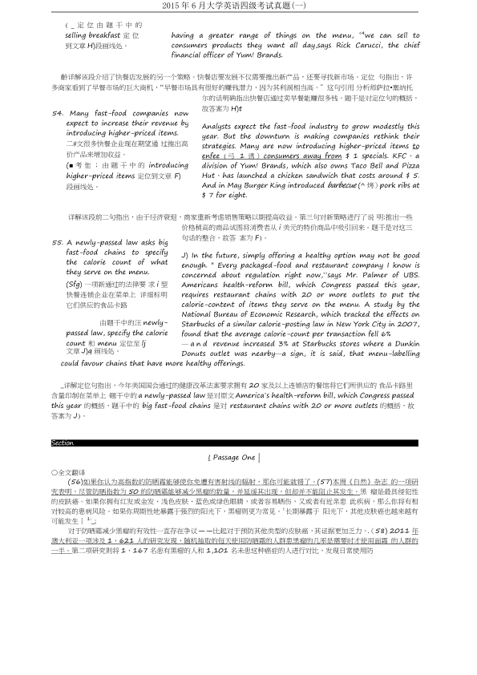
2015 年6 月大学英语四级考试真题(一)
( _ 定位由题干中的
selling breakfast 定位
到文章H)段画线处。
54.
Many
fast-food
companies
now
expect to increase their revenue by
introducing higher-priced items.
二#文很多快餐企业现在期望通过推出高
价产品来增加收益。
(■考隹；由题干中的introducing
higher-priced items 定位到文章F)
段画线处。
55. A newly-passed law asks big
fast-food
chains
to
specify
the
calorie
count
of
what
they serve on the menu.
(Sfg) 一项新通过的法律要求i 型
快餐连锁企业在菜单上详细标明
它们供应的食品卡路
由题干中的汪newly-
passed law, specify the calorie
count 和menu 定位至lj
文章J)g 画线处。
having a greater range of things on the menu,
<4we can sell to
consumers products they want all day,says Rick Carucci, the chief
financial officer of Yum! Brands.
齡详解该段介绍了快餐店发展的另一个策略。快餐店要发展不仅需要推出新产品，还要寻找新市场。定位句指出，许
多商家看到了早餐市场的巨大商机，“早餐市场具有很好的赚钱潜力，因为其利润相当高。”这句引用分析师萨拉•塞纳托
尔的话明确指出快餐店通过卖早餐能赚很多钱。题干是对定位句的概括，
故答案为H)t
Analysts expect the fast-food industry to grow modestly this
year. But the downturn is making companies rethink their
strategies. Many are now introducing higher-priced items to
enfee ( 弓1 诱）consumers away from $ 1 specials. KFC ，a
division of Yum! Brands, which also owns Taco Bell and Pizza
Hut，has launched a chicken sandwich that costs around $ 5.
And in May Burger King introduced barbecue (^ 烤）pork ribs at
$ 7 for eight.
详解该段前二句指出，由于经济衰退，商家重新考虑销售策略以期提高收益。第三句对新策略进行了说明:推出一些
价格稍高的商品试图将消费者从i 美元的特价商品中吸引回来。题干是对这三
句话的整合，故答案为F)。
J) In the future, simply offering a healthy option may not be good
enough.
u Every packaged-food and restaurant company I know is
concerned about regulation right now,’’says Mr. Palmer of UBS.
Americans
health-reform
bill,
which
Congress
passed
this
year,
requires restaurant chains with 20 or more outlets to put the
calorie-content of items they serve on the menu. A study by the
National Bureau of Economic Research, which tracked the effects on
Starbucks of a similar calorie-posting law in New York City in 2007,
found that the average calorie-count per transaction fell 6%
— a n d
revenue increased 3% at Starbucks stores where a Dunkin
Donuts outlet was nearby—a sign, it is said, that menu-labelling
could favour chains that have more healthy offerings.
_详解定位句指出，今年美国国会通过的健康改革法案要求拥有20 家及以上连锁店的餐馆将它们所供应的食品卡路里
含量印制在菜单上。题干中的a newly-passed law 是对原文America’s health-reform bill, which Congress passed
this year 的概括，题干中的big fast-food chains 是对restaurant chains with 20 or more outlets 的概括，故
答案为J)。
Section
I Passage One |
〇全文翻译
(56)如果你认为高指数的防晒霜能够使你免遭有害射线的辐射，那你可能就错了。(57)本周《自然》杂志的一项研
究表明，尽管防晒指数为50 的防晒霜能够减少黑瘤的数量，并延缓其出现，但却并不能阻止其发生。黑瘤是最具侵犯性
的皮趺癌。如果你拥有红发或金发、浅色皮肤、蓝色或绿色眼睛，或者容易晒伤，又或者有近亲患此疾病，那么你将有相
对较高的患病风险。如果你周期性地暴露于强烈的阳光下，黑瘤则更为常见。
U长期暴露于阳光下，其他皮肤癌也越来越有
可能发生丨1:_;
对于防晒霜减少黑瘤的有效性一直存在争议——比起对于预防其他类型的皮肤癌，其证据更加乏力。.（58) 2011 年
澳大利亚一项涉及1，621 人的研究发现，随机抽取的每天使用防晒霜的人群患黑瘤的几率是需要时才使用面霜的人群的
一半。第二项研究则将1，167 名患有黑瘤的人和1,101 名未患这种癌症的人进行对比，发现日常使用防
查看 / 复制本页文字
2015 年6 月大学英语四级考试真题(一) ( _ 定位由题干中的 selling breakfast 定位 到文章H)段画线处。 54. Many fast-food companies now expect to increase their revenue by introducing higher-priced items. 二#文很多快餐企业现在期望通过推出高 价产品来增加收益。 (■考隹；由题干中的introducing higher-priced items 定位到文章F) 段画线处。 55. A newly-passed law asks big fast-food chains to specify the calorie count of what they serve on the menu. (Sfg) 一项新通过的法律要求i 型 快餐连锁企业在菜单上详细标明 它们供应的食品卡路 由题干中的汪newly- passed law, specify the calorie count 和menu 定位至lj 文章J)g 画线处。 having a greater range of things on the menu, <4we can sell to consumers products they want all day,says Rick Carucci, the chief financial officer of Yum! Brands. 齡详解该段介绍了快餐店发展的另一个策略。快餐店要发展不仅需要推出新产品，还要寻找新市场。定位句指出，许 多商家看到了早餐市场的巨大商机，“早餐市场具有很好的赚钱潜力，因为其利润相当高。”这句引用分析师萨拉•塞纳托 尔的话明确指出快餐店通过卖早餐能赚很多钱。题干是对定位句的概括， 故答案为H)t Analysts expect the fast-food industry to grow modestly this year. But the downturn is making companies rethink their strategies. Many are now introducing higher-priced items to enfee ( 弓1 诱）consumers away from $ 1 specials. KFC ，a division of Yum! Brands, which also owns Taco Bell and Pizza Hut，has launched a chicken sandwich that costs around $ 5. And in May Burger King introduced barbecue (^ 烤）pork ribs at $ 7 for eight. 详解该段前二句指出，由于经济衰退，商家重新考虑销售策略以期提高收益。第三句对新策略进行了说明:推出一些 价格稍高的商品试图将消费者从i 美元的特价商品中吸引回来。题干是对这三 句话的整合，故答案为F)。 J) In the future, simply offering a healthy option may not be good enough. u Every packaged-food and restaurant company I know is concerned about regulation right now,’’says Mr. Palmer of UBS. Americans health-reform bill, which Congress passed this year, requires restaurant chains with 20 or more outlets to put the calorie-content of items they serve on the menu. A study by the National Bureau of Economic Research, which tracked the effects on Starbucks of a similar calorie-posting law in New York City in 2007, found that the average calorie-count per transaction fell 6% — a n d revenue increased 3% at Starbucks stores where a Dunkin Donuts outlet was nearby—a sign, it is said, that menu-labelling could favour chains that have more healthy offerings. _详解定位句指出，今年美国国会通过的健康改革法案要求拥有20 家及以上连锁店的餐馆将它们所供应的食品卡路里 含量印制在菜单上。题干中的a newly-passed law 是对原文America’s health-reform bill, which Congress passed this year 的概括，题干中的big fast-food chains 是对restaurant chains with 20 or more outlets 的概括，故 答案为J)。 Section I Passage One | 〇全文翻译 (56)如果你认为高指数的防晒霜能够使你免遭有害射线的辐射，那你可能就错了。(57)本周《自然》杂志的一项研 究表明，尽管防晒指数为50 的防晒霜能够减少黑瘤的数量，并延缓其出现，但却并不能阻止其发生。黑瘤是最具侵犯性 的皮趺癌。如果你拥有红发或金发、浅色皮肤、蓝色或绿色眼睛，或者容易晒伤，又或者有近亲患此疾病，那么你将有相 对较高的患病风险。如果你周期性地暴露于强烈的阳光下，黑瘤则更为常见。 U长期暴露于阳光下，其他皮肤癌也越来越有 可能发生丨1:_; 对于防晒霜减少黑瘤的有效性一直存在争议——比起对于预防其他类型的皮肤癌，其证据更加乏力。.（58) 2011 年 澳大利亚一项涉及1，621 人的研究发现，随机抽取的每天使用防晒霜的人群患黑瘤的几率是需要时才使用面霜的人群的 一半。第二项研究则将1，167 名患有黑瘤的人和1,101 名未患这种癌症的人进行对比，发现日常使用防
第 21 / 25 页
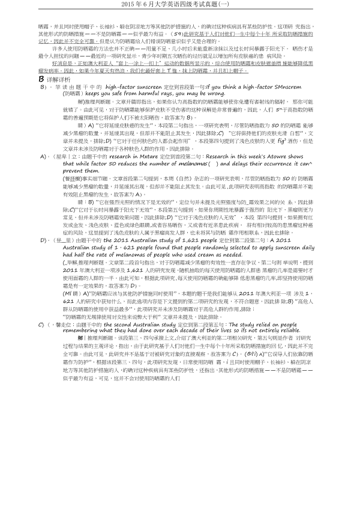
2015 年6 月大学英语四级考试真题(一)
晒霜，并且同时使用帽子、长袖衫、躲在阴凉地方等其他防护措施的人，的确对这种疾病具有某些防护性。这项研究指出，
其他形式的防晒措施——不是防晒霜——似乎最为有益。（59)此研究基于人们对他们一生中每个十年所采取防晒措施的
记忆，因此并不完全可靠。但是认为防晒霜给人们错误防晒意识似乎又是合理的。.
许多人使用防晒霜的方法也并不正确——用量不足、几小时后未能重新涂抹以及过长时间暴露于阳光下。晒伤才是
最令人担忧的问题——最近的一项研究显示，青少年时期五次晒伤的经历就足以增加所有皮肤癌的患病风险。
好消息是，正如澳大利亚人“套上一涂上一扣上”运动的数据所显示的，综合使用防晒霜和皮肤遮盖措施能够降低黑
瘤发病率。因此，如果今年夏天有热浪，我们也最好套上T 恤，抹上防晒霜，并且扣上帽子。
B 详解详析
B) 。苹读由题干中的high-factor sunscreen 定位到首段第一句:If you think a high-factor SMnscrem
(防晒霜）keeps you safe from harmful rays, you may be wrong.
解)推理判断题。文章开篇即指出，如果你认为高指数的防晒霜能够使你免遭有害射线的辐射，那你可能
就错了。由此可见，对于防晒霜能够保护皮肤不受伤害的这种误解是非常普遍的，因此，人们5^于高指数防晒
霜的普遍预期是它将保护人们不被太阳晒伤，故答案为B)。
睛）A) “它将延缓皮肤癌的发生”，本段第二句指出，一项研究表明，尽管防晒指数为50 的防晒霜能够
减少黑瘤的数量，并延缓其出现，但却并不能阻止其发生，因此排除;C) “它将保持他们的皮肤光滑白皙”，文
章并未提及，排除;D) “它对于任何肤色的人都会起作用”，本段第四句提到了浅色皮肤的人更fig1 洒伤，但是
文章并未涉及防晒霜对于各种肤色人群的作用，因此排除。
A)。（屋卑丨立；由题干中的research in Mxtare 定位到首段第二句：Research in this week’s Atowre shows
that while factor 50 reduces the number of melanomas (
) and delays their occurrence, it can^
prevent them.
(餐择櫥)事实细节题。文章首段第二句提到，本周《自然》杂志的一项研究表明，尽管防晒指数为50 的防晒霜
能够减少黑瘤的数量，并延缓其出现，但却并不能阻止其发生。由此可见,此项研究表明高指数的防晒霜并不能
有效阻止黑瘤的发生，故答案为A)。
睛：B) “它在强烈光照的情况下是无效的”，定位句并未提及光照强度与防_霜效果之间的关系，因此排
除;C)“它对于长时间暴露于阳光下无效”，本段第五句提到，如果你周期性地暴露于强烈的阳光下，黑瘤则更为
常见，但并未涉及防晒霜效果问题，因此排除;D) “它对于浅色皮肤的人无效”，本段第四句提到，如果拥有红
发或金发、浅色皮肤、蓝色或绿色眼睛,或者容易晒伤，又或者有近亲患此疾病，将有相对较高的患黑瘤这种癌
症的风险，这里提到了浅色皮肤的人属于黑瘤高发人群，也未将其与防晒霜作用相联系，因此也排除。
D)。（昼__里）由题干中的the 2011 Australian study of 1,621 people 定位到第二段第二句：A 2011
Australian study of 1，621 people found that people randomly selected to apply sunscreen daily
had half the rate of melanomas of people who used cream as needed.
(_毕解;推理判断题。文章第二段首句指出，对于防晒霜减少黑瘤的有效性一直存在争议，第二句则举说明，提到
2011 年澳大利亚一项涉及1,621 人的研究发现，随机抽取的每天使用防晒霜的人群患黑瘤的几率是需要时才
使用面霜的人群的一半。由此可知，根据此项研究,每天使用防晒霜的确能够降低患黑瘤的几率,即坚持使用防晒
霜是有一定效果的，故答案为D)。
(Ml 睛）A)“防晒霜应该与其他防护措施同时使用”，本题的题干是我们能够从2011 年澳大利亚一项涉及1，
621 人的研究中获知什么，而此选项内容是下文提到的第二项研究的发现，不符合题意，因此排除;B) “高危人
群从防晒霜的使用中获益最多”，此项研究并未涉及防晒霜对于高危人群的作用,排除；
“防晒霜的无规律使用对女性来说弊大于利”，文章并未提及，因此排除。
C)。（，馨走位；由题干中的the second Australian study 定位到第二段第五句：The study relied on people
remembering what they had done over each decade of their lives, so ifs not entirely reliable.
解丨推理判断题。该段第三、四句承接上文,介绍了澳大利亚的第二项相关研究，第五句则是作者对研究
过程与结果的主观评论，指出，由于此研究基于人们对他们一生中每个十年所采取防晒措施的回忆，因此并不完
全可靠。由此可见，此研究并不是基于对被研究对象的直接观察，故答案为C)。(®l'i) A)“它误导人们依靠防晒
霜作为防护”，根据该段第三、四句，此项研究发现，日常使用防晒霜，i 且同时使用帽子、长袖衫、躲在阴凉
地方等其他防护措施的人，的确对这种疾病具有某些防护性，还指出，其他形式的防晒措施——不是防晒霜——
似乎最为有益，可见，这并不会对使用防晒霜的人们
查看 / 复制本页文字
2015 年6 月大学英语四级考试真题(一) 晒霜，并且同时使用帽子、长袖衫、躲在阴凉地方等其他防护措施的人，的确对这种疾病具有某些防护性。这项研究指出， 其他形式的防晒措施——不是防晒霜——似乎最为有益。（59)此研究基于人们对他们一生中每个十年所采取防晒措施的 记忆，因此并不完全可靠。但是认为防晒霜给人们错误防晒意识似乎又是合理的。. 许多人使用防晒霜的方法也并不正确——用量不足、几小时后未能重新涂抹以及过长时间暴露于阳光下。晒伤才是 最令人担忧的问题——最近的一项研究显示，青少年时期五次晒伤的经历就足以增加所有皮肤癌的患病风险。 好消息是，正如澳大利亚人“套上一涂上一扣上”运动的数据所显示的，综合使用防晒霜和皮肤遮盖措施能够降低黑 瘤发病率。因此，如果今年夏天有热浪，我们也最好套上T 恤，抹上防晒霜，并且扣上帽子。 B 详解详析 B) 。苹读由题干中的high-factor sunscreen 定位到首段第一句:If you think a high-factor SMnscrem (防晒霜）keeps you safe from harmful rays, you may be wrong. 解)推理判断题。文章开篇即指出，如果你认为高指数的防晒霜能够使你免遭有害射线的辐射，那你可能 就错了。由此可见，对于防晒霜能够保护皮肤不受伤害的这种误解是非常普遍的，因此，人们5^于高指数防晒 霜的普遍预期是它将保护人们不被太阳晒伤，故答案为B)。 睛）A) “它将延缓皮肤癌的发生”，本段第二句指出，一项研究表明，尽管防晒指数为50 的防晒霜能够 减少黑瘤的数量，并延缓其出现，但却并不能阻止其发生，因此排除;C) “它将保持他们的皮肤光滑白皙”，文 章并未提及，排除;D) “它对于任何肤色的人都会起作用”，本段第四句提到了浅色皮肤的人更fig1 洒伤，但是 文章并未涉及防晒霜对于各种肤色人群的作用，因此排除。 A)。（屋卑丨立；由题干中的research in Mxtare 定位到首段第二句：Research in this week’s Atowre shows that while factor 50 reduces the number of melanomas ( ) and delays their occurrence, it can^ prevent them. (餐择櫥)事实细节题。文章首段第二句提到，本周《自然》杂志的一项研究表明，尽管防晒指数为50 的防晒霜 能够减少黑瘤的数量，并延缓其出现，但却并不能阻止其发生。由此可见,此项研究表明高指数的防晒霜并不能 有效阻止黑瘤的发生，故答案为A)。 睛：B) “它在强烈光照的情况下是无效的”，定位句并未提及光照强度与防_霜效果之间的关系，因此排 除;C)“它对于长时间暴露于阳光下无效”，本段第五句提到，如果你周期性地暴露于强烈的阳光下，黑瘤则更为 常见，但并未涉及防晒霜效果问题，因此排除;D) “它对于浅色皮肤的人无效”，本段第四句提到，如果拥有红 发或金发、浅色皮肤、蓝色或绿色眼睛,或者容易晒伤，又或者有近亲患此疾病，将有相对较高的患黑瘤这种癌 症的风险，这里提到了浅色皮肤的人属于黑瘤高发人群，也未将其与防晒霜作用相联系，因此也排除。 D)。（昼__里）由题干中的the 2011 Australian study of 1,621 people 定位到第二段第二句：A 2011 Australian study of 1，621 people found that people randomly selected to apply sunscreen daily had half the rate of melanomas of people who used cream as needed. (_毕解;推理判断题。文章第二段首句指出，对于防晒霜减少黑瘤的有效性一直存在争议，第二句则举说明，提到 2011 年澳大利亚一项涉及1,621 人的研究发现，随机抽取的每天使用防晒霜的人群患黑瘤的几率是需要时才 使用面霜的人群的一半。由此可知，根据此项研究,每天使用防晒霜的确能够降低患黑瘤的几率,即坚持使用防晒 霜是有一定效果的，故答案为D)。 (Ml 睛）A)“防晒霜应该与其他防护措施同时使用”，本题的题干是我们能够从2011 年澳大利亚一项涉及1， 621 人的研究中获知什么，而此选项内容是下文提到的第二项研究的发现，不符合题意，因此排除;B) “高危人 群从防晒霜的使用中获益最多”，此项研究并未涉及防晒霜对于高危人群的作用,排除； “防晒霜的无规律使用对女性来说弊大于利”，文章并未提及，因此排除。 C)。（，馨走位；由题干中的the second Australian study 定位到第二段第五句：The study relied on people remembering what they had done over each decade of their lives, so ifs not entirely reliable. 解丨推理判断题。该段第三、四句承接上文,介绍了澳大利亚的第二项相关研究，第五句则是作者对研究 过程与结果的主观评论，指出，由于此研究基于人们对他们一生中每个十年所采取防晒措施的回忆，因此并不完 全可靠。由此可见，此研究并不是基于对被研究对象的直接观察，故答案为C)。(®l'i) A)“它误导人们依靠防晒 霜作为防护”，根据该段第三、四句，此项研究发现，日常使用防晒霜，i 且同时使用帽子、长袖衫、躲在阴凉 地方等其他防护措施的人，的确对这种疾病具有某些防护性，还指出，其他形式的防晒措施——不是防晒霜—— 似乎最为有益，可见，这并不会对使用防晒霜的人们
第 22 / 25 页

©高频词汇及短语harmful
nhaimfal] ad/ 有害的delay [dilei] u 延
缓，推迟prevent [pri1 vent] u 预防，
阻止occurrence [a'kArgns] n.发生，出
现exposure [ik'sp9〇39] n.暴露
select [silekt] u 抽取，选择reliable
[rilaisbal] ac^.可信的，可靠的have a
higher risk 有更大的风险rely on 基于，依
赖于sense of security 安全感
造成误导，因此排除;B)“它帮助人们选择最有效的防晒霜”，此项研究并未提及防晒霜的选择问题，因此排
除;D)“它证实了澳大利亚第一项研究的结果”，根据该段第二句，第一项研究发现了防晒霜的有效性，而第三、
四句则指出.第二项研究的结论是防晒霜需要与其他防晒措施共同使用，且其他防晒措施可能更@有效，可见第二
项研究并非证实第一项研究的结果，因此排除。
60. A)。丨_定位由题干中的reduce melanoma rates 定位到第四段:The good news is that a combination of
sunscreen and covering up can reduce melanoma rates，as shown by Australian figures from their
slip-slop-slap campaign. So if there is a heat wave this summer, it would be best for us, too, to slip
on a shirt, slop on (ft_h) sunscreen arid slap on a hat.
(Mf 解1 推理判断题。文章第四段第一句提到，正如澳大利亚人“套上一涂上一扣上”运动的数据所显示的，i
合使用防晒霜和皮肤遮盖措施能够降低黑瘤发病率，第二句据此提出作者自己的观点和建议：如果今年夏天有热
浪，我们也最好套上T 恤，抹上防晒霜,并且扣上帽子。也就是说，作者建议我们同时使用防晒霜和衣服、帽子
等其他防护措施，故答案为A)。
B)“尽可能躲在阴凉的地方”，文章第二段提及的第二项研究提到了躲在阴凉地方这种防护措^，但
是作者并未对此进行评论和推荐，因此排除;C) “使用遮挡的防护措施代替防晒霜”，根据文章第四段，作者推
荐综合使用各种防护措施，并未建议放弃使用防晒霜，因此排除;D) “使用适量的防晒霜”，文章第三段介绍了
许多人对防晒霜的错误使用方法，其中之一是用量不足，但这并非作者的建议内容，因此排除。
Passage Two
全文翻译
在发达国家，与技术水平较低的人相比，受教育程度较高的人工作年限越来越长。年龄在62 岁到74 岁的美国人中，
拥有专业学位的人约有65%仍然处在劳动大军之中，而只拥有高中学历的人只有32%尚在工作。
这一差距正是不断加剧的高学历高收入富人与无技术低收入穷人之间两极分化的部分表现。迅速发展的技术使高技术人群
的收入增加，同时也压缩了无技术人群的收入。无论对于个人还是社会，其影响都颇为深远。
世界正在面临老龄人口数量惊人的增长，而他们将比以往任何时候都更长寿。在接下来的20 年里，全球65 岁及以
上的人口数量将几乎翻一番，从6 亿增加至11 亿。（63) 20 世纪，更加长寿造成了退休生活的年份更长而不是工作的
卑份更长，这一经历使得观察家们相信，这一变化将导致经济增长减缓，同时，退休金申领人数的激增将产生政府预算问
题。
但是，工作中的年轻人与清闲的老年人之间出现严重分化的这一概念忽略了一个新的趋势，即不断增大的高技术人群
与无技术人群之间的差距。年轻的无技术人群的就业率下降，而老龄的高技术人群工作年份却越来越长。这一分化在美国
表现得最为严重，二战后生育高峰期出生的高学历美国人正一再推迟退休，而很多技术较低的年轻人却被挤出劳动力市场。
政策是一方面的原因〇(64)许多欧洲国家政府已经摒弃了曾鼓励人们尽早退休的政策。预期寿命的延长以及慷慨的固
定养老金计划被不再慷慨的固定缴费养老金计划所替代，这些都意味着甚至有钱人也必须延长工作年限以获得舒适的退休
生活。但是，工作性质的变化也起到了很大作用。对那些高学历人士而言，工作报酬在大幅增加，这些人将继续获得较高
的收入，直到老年，因为当今的老龄高学历人群比上一代人工作更有成效。(65)技术革新可能将进一步增强这一转变：作
为计算机的补充的技能，从经营管理技巧到创新能力，都不会随着年龄的增长而衰退。
e 详解详析
61. B)。_定位由题干中的rich countries 定位到首段第一句:Across the rich world，well-educated people
increasingly work longer than the less-skilled.
事实细节题。文章开篇即指出，在发达国家’与技术水平较低的人相比,受教育程度较高的人工作年限越来越长。由此可见，
目前在发达国家的劳动力大军中，学历较高的人工作时间更长，故答案
为B)0
查看 / 复制本页文字
©高频词汇及短语harmful nhaimfal] ad/ 有害的delay [dilei] u 延 缓，推迟prevent [pri1 vent] u 预防， 阻止occurrence [a'kArgns] n.发生，出 现exposure [ik'sp9〇39] n.暴露 select [silekt] u 抽取，选择reliable [rilaisbal] ac^.可信的，可靠的have a higher risk 有更大的风险rely on 基于，依 赖于sense of security 安全感 造成误导，因此排除;B)“它帮助人们选择最有效的防晒霜”，此项研究并未提及防晒霜的选择问题，因此排 除;D)“它证实了澳大利亚第一项研究的结果”，根据该段第二句，第一项研究发现了防晒霜的有效性，而第三、 四句则指出.第二项研究的结论是防晒霜需要与其他防晒措施共同使用，且其他防晒措施可能更@有效，可见第二 项研究并非证实第一项研究的结果，因此排除。 60. A)。丨_定位由题干中的reduce melanoma rates 定位到第四段:The good news is that a combination of sunscreen and covering up can reduce melanoma rates，as shown by Australian figures from their slip-slop-slap campaign. So if there is a heat wave this summer, it would be best for us, too, to slip on a shirt, slop on (ft_h) sunscreen arid slap on a hat. (Mf 解1 推理判断题。文章第四段第一句提到，正如澳大利亚人“套上一涂上一扣上”运动的数据所显示的，i 合使用防晒霜和皮肤遮盖措施能够降低黑瘤发病率，第二句据此提出作者自己的观点和建议：如果今年夏天有热 浪，我们也最好套上T 恤，抹上防晒霜,并且扣上帽子。也就是说，作者建议我们同时使用防晒霜和衣服、帽子 等其他防护措施，故答案为A)。 B)“尽可能躲在阴凉的地方”，文章第二段提及的第二项研究提到了躲在阴凉地方这种防护措^，但 是作者并未对此进行评论和推荐，因此排除;C) “使用遮挡的防护措施代替防晒霜”，根据文章第四段，作者推 荐综合使用各种防护措施，并未建议放弃使用防晒霜，因此排除;D) “使用适量的防晒霜”，文章第三段介绍了 许多人对防晒霜的错误使用方法，其中之一是用量不足，但这并非作者的建议内容，因此排除。 Passage Two 全文翻译 在发达国家，与技术水平较低的人相比，受教育程度较高的人工作年限越来越长。年龄在62 岁到74 岁的美国人中， 拥有专业学位的人约有65%仍然处在劳动大军之中，而只拥有高中学历的人只有32%尚在工作。 这一差距正是不断加剧的高学历高收入富人与无技术低收入穷人之间两极分化的部分表现。迅速发展的技术使高技术人群 的收入增加，同时也压缩了无技术人群的收入。无论对于个人还是社会，其影响都颇为深远。 世界正在面临老龄人口数量惊人的增长，而他们将比以往任何时候都更长寿。在接下来的20 年里，全球65 岁及以 上的人口数量将几乎翻一番，从6 亿增加至11 亿。（63) 20 世纪，更加长寿造成了退休生活的年份更长而不是工作的 卑份更长，这一经历使得观察家们相信，这一变化将导致经济增长减缓，同时，退休金申领人数的激增将产生政府预算问 题。 但是，工作中的年轻人与清闲的老年人之间出现严重分化的这一概念忽略了一个新的趋势，即不断增大的高技术人群 与无技术人群之间的差距。年轻的无技术人群的就业率下降，而老龄的高技术人群工作年份却越来越长。这一分化在美国 表现得最为严重，二战后生育高峰期出生的高学历美国人正一再推迟退休，而很多技术较低的年轻人却被挤出劳动力市场。 政策是一方面的原因〇(64)许多欧洲国家政府已经摒弃了曾鼓励人们尽早退休的政策。预期寿命的延长以及慷慨的固 定养老金计划被不再慷慨的固定缴费养老金计划所替代，这些都意味着甚至有钱人也必须延长工作年限以获得舒适的退休 生活。但是，工作性质的变化也起到了很大作用。对那些高学历人士而言，工作报酬在大幅增加，这些人将继续获得较高 的收入，直到老年，因为当今的老龄高学历人群比上一代人工作更有成效。(65)技术革新可能将进一步增强这一转变：作 为计算机的补充的技能，从经营管理技巧到创新能力，都不会随着年龄的增长而衰退。 e 详解详析 61. B)。_定位由题干中的rich countries 定位到首段第一句:Across the rich world，well-educated people increasingly work longer than the less-skilled. 事实细节题。文章开篇即指出，在发达国家’与技术水平较低的人相比,受教育程度较高的人工作年限越来越长。由此可见， 目前在发达国家的劳动力大军中，学历较高的人工作时间更长，故答案 为B)0
第 23 / 25 页
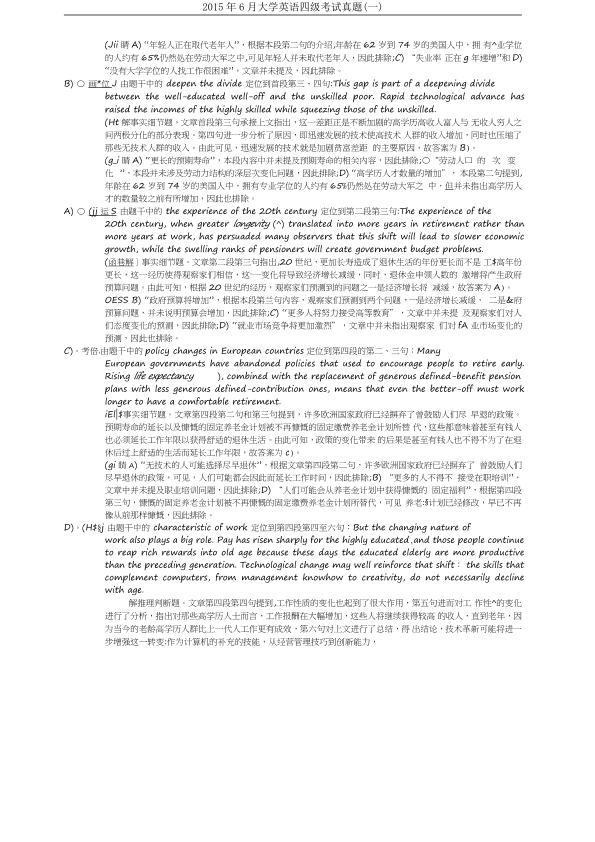
2015 年6 月大学英语四级考试真题(一)
(Jii 睛A) “年轻人正在取代老年人”，根据本段第二句的介绍,年龄在62 岁到74 岁的美国人中，拥有^业学位
的人约有65%仍然处在劳动大军之中,可见年轻人并未取代老年人，因此排除;C) “失业率正在g 年递增”和D)
“没有大学学位的人找工作很困难”，文章并未提及，因此排除。
B) 〇画*位J 由题干中的deepen the divide 定位到首段第三、四句:This gap is part of a deepening divide
between the well-educated well-off and the unskilled poor. Rapid technological advance has
raised the incomes of the highly skilled while squeezing those of the unskilled.
(Ht 解事实细节题。文章首段第三句承接上文指出，这一差距正是不断加剧的高学历高收人富人与无收人穷人之
间两极分化的部分表现。第四句进一步分析了原因，即迅速发展的技术使高技术人群的收入增加，同时也压缩了
那些无技术人群的收入。由此可见，迅速发展的技术就是加剧贫富差距的主要原因，故答案为B)。
(g_i 睛A) “更长的预期寿命”，本段内容中并未提及预期寿命的相关内容，因此排除;〇“劳动人口的次变
化”，本段并未涉及劳动力结构的深层次变化问题，因此排除;D) “高学历人才数量的增加”，本段第二句提到,
年龄在62 岁到74 岁的美国人中，拥有专业学位的人约有65%仍然处在劳动大军之中，但并未指出高学历人
才的数量较之前有所增加，因此也排除。
A) 〇(jj 运S 由题干中的the experience of the 20th century 定位到第二段第三句:The experience of the
20th century, when greater longevity (^) translated into more years in retirement rather than
more years at work, has persuaded many observers that this shift will lead to slower economic
growth, while the swelling ranks of pensioners will create government budget problems.
(函巷解〕事实细节题。文章第二段第三句指出,20 世纪，更加长寿造成了退休生活的年份更长而不是工$高年份
更长，这一经历使得观察家们相信，这_一变化将导致经济增长减缓，同时，退休金申领人数的激增将产生政府
预算问题。由此可知，根据20 世纪的经历，观察家们预测到的问题之一是经济增长将减缓，故答案为A)。
OESS B) “政府预算将增加”，根据本段第兰句内容，观察家们预测到两个问题，一是经济增长减缓，二是&府
预算问题，并未说明预算会增加，因此排除;C) “更多人将努力接受高等教育”，文章中并未提及观察家们对人
们态度变化的预测，因此排除;D) “就业市场竞争将更加激烈”，文章中并未指出观察家们对fA 业市场变化的
预测，因此也排除。
C)。考倍.由题干中的policy changes in European countries 定位到第四段的第二、三句：Many
European governments have abandoned policies that used to encourage people to retire early.
Rising life expectancy
), combined with the replacement of generous defined-benefit pension
plans with less generous defined-contribution ones, means that even the better-off must work
longer to have a comfortable retirement.
iEl|$事实细节题。文章第四段第二句和第三句提到，许多欧洲国家政府已经摒弃了曾鼓励人们尽早退的政策。
预期寿命的延长以及慷慨的固定养老金计划被不再慷慨的固定缴费养老金计划所替代，这些都意味着甚至有钱人
也必须延长工作年限以获得舒适的退休生活。由此可知，政策的变化带来的后果是甚至有钱人也不得不为了在退
休后过上舒适的生活而延长工作年限，故答案为c)。
(gi 睛A) “无技术的人可能选择尽早退休”，根据文章第四段第二句，许多欧洲国家政府已经摒弃了曾鼓励人们
尽早退休的政策，可见，人们可能都会因此而延长工作时间，因此排除;B) “更多的人不得不接受在职培训”，
文章中并未提及职业培训问题，因此排除;D) “人们可能会从养老金计划中获得慷慨的固定福利”，根据第四段
第三句，慷慨的固定养老金计划被不再慷慨的固定缴费养老金计划所替代，可见养老:§计划已经修改，早已不再
像从前那样慷慨，因此排除。
D)。(H$§j 由题干中的characteristic of work 定位到第四段第四至六句：But the changing nature of
work also plays a big role. Pay has risen sharply for the highly educated,and those people continue
to reap rich rewards into old age because these days the educated elderly are more productive
than the preceding generation. Technological change may well reinforce that shift：the skills that
complement computers, from management knowhow to creativity, do not necessarily decline
with age.
解推理判断题。文章第四段第四句提到,工作性质的变化也起到了很大作用，第五句进而对工作性^的变化
进行了分析，指出对那些高学历人士而言，工作报酬在大幅增加，这些人将继续获得较高的收人，直到老年，因
为当今的老龄高学历人群比上一代人工作更有成效，第六句对上文进行了总结，得出结论，技术革新可能将进一
步增强这一转变:作为计算机的补充的技能，从经营管理技巧到创新能力，
查看 / 复制本页文字
2015 年6 月大学英语四级考试真题(一) (Jii 睛A) “年轻人正在取代老年人”，根据本段第二句的介绍,年龄在62 岁到74 岁的美国人中，拥有^业学位 的人约有65%仍然处在劳动大军之中,可见年轻人并未取代老年人，因此排除;C) “失业率正在g 年递增”和D) “没有大学学位的人找工作很困难”，文章并未提及，因此排除。 B) 〇画*位J 由题干中的deepen the divide 定位到首段第三、四句:This gap is part of a deepening divide between the well-educated well-off and the unskilled poor. Rapid technological advance has raised the incomes of the highly skilled while squeezing those of the unskilled. (Ht 解事实细节题。文章首段第三句承接上文指出，这一差距正是不断加剧的高学历高收人富人与无收人穷人之 间两极分化的部分表现。第四句进一步分析了原因，即迅速发展的技术使高技术人群的收入增加，同时也压缩了 那些无技术人群的收入。由此可见，迅速发展的技术就是加剧贫富差距的主要原因，故答案为B)。 (g_i 睛A) “更长的预期寿命”，本段内容中并未提及预期寿命的相关内容，因此排除;〇“劳动人口的次变 化”，本段并未涉及劳动力结构的深层次变化问题，因此排除;D) “高学历人才数量的增加”，本段第二句提到, 年龄在62 岁到74 岁的美国人中，拥有专业学位的人约有65%仍然处在劳动大军之中，但并未指出高学历人 才的数量较之前有所增加，因此也排除。 A) 〇(jj 运S 由题干中的the experience of the 20th century 定位到第二段第三句:The experience of the 20th century, when greater longevity (^) translated into more years in retirement rather than more years at work, has persuaded many observers that this shift will lead to slower economic growth, while the swelling ranks of pensioners will create government budget problems. (函巷解〕事实细节题。文章第二段第三句指出,20 世纪，更加长寿造成了退休生活的年份更长而不是工$高年份 更长，这一经历使得观察家们相信，这_一变化将导致经济增长减缓，同时，退休金申领人数的激增将产生政府 预算问题。由此可知，根据20 世纪的经历，观察家们预测到的问题之一是经济增长将减缓，故答案为A)。 OESS B) “政府预算将增加”，根据本段第兰句内容，观察家们预测到两个问题，一是经济增长减缓，二是&府 预算问题，并未说明预算会增加，因此排除;C) “更多人将努力接受高等教育”，文章中并未提及观察家们对人 们态度变化的预测，因此排除;D) “就业市场竞争将更加激烈”，文章中并未指出观察家们对fA 业市场变化的 预测，因此也排除。 C)。考倍.由题干中的policy changes in European countries 定位到第四段的第二、三句：Many European governments have abandoned policies that used to encourage people to retire early. Rising life expectancy ), combined with the replacement of generous defined-benefit pension plans with less generous defined-contribution ones, means that even the better-off must work longer to have a comfortable retirement. iEl|$事实细节题。文章第四段第二句和第三句提到，许多欧洲国家政府已经摒弃了曾鼓励人们尽早退的政策。 预期寿命的延长以及慷慨的固定养老金计划被不再慷慨的固定缴费养老金计划所替代，这些都意味着甚至有钱人 也必须延长工作年限以获得舒适的退休生活。由此可知，政策的变化带来的后果是甚至有钱人也不得不为了在退 休后过上舒适的生活而延长工作年限，故答案为c)。 (gi 睛A) “无技术的人可能选择尽早退休”，根据文章第四段第二句，许多欧洲国家政府已经摒弃了曾鼓励人们 尽早退休的政策，可见，人们可能都会因此而延长工作时间，因此排除;B) “更多的人不得不接受在职培训”， 文章中并未提及职业培训问题，因此排除;D) “人们可能会从养老金计划中获得慷慨的固定福利”，根据第四段 第三句，慷慨的固定养老金计划被不再慷慨的固定缴费养老金计划所替代，可见养老:§计划已经修改，早已不再 像从前那样慷慨，因此排除。 D)。(H$§j 由题干中的characteristic of work 定位到第四段第四至六句：But the changing nature of work also plays a big role. Pay has risen sharply for the highly educated,and those people continue to reap rich rewards into old age because these days the educated elderly are more productive than the preceding generation. Technological change may well reinforce that shift：the skills that complement computers, from management knowhow to creativity, do not necessarily decline with age. 解推理判断题。文章第四段第四句提到,工作性质的变化也起到了很大作用，第五句进而对工作性^的变化 进行了分析，指出对那些高学历人士而言，工作报酬在大幅增加，这些人将继续获得较高的收人，直到老年，因 为当今的老龄高学历人群比上一代人工作更有成效，第六句对上文进行了总结，得出结论，技术革新可能将进一 步增强这一转变:作为计算机的补充的技能，从经营管理技巧到创新能力，
第 24 / 25 页
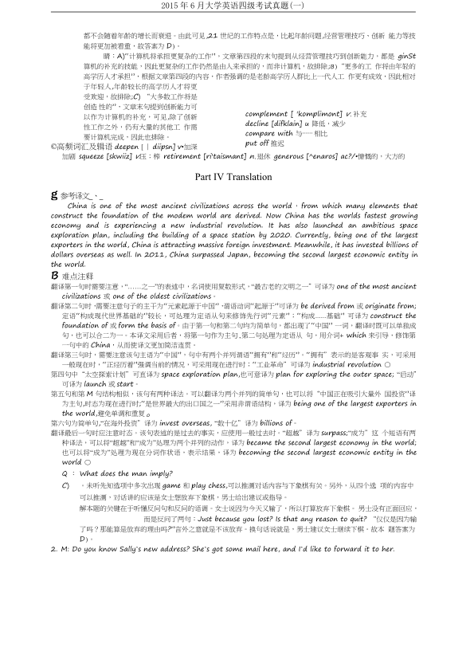
2015 年6 月大学英语四级考试真题(一)
complement [ 'komplimont] v.补充
decline [difklain] u 降低，减少
compare with 与...... 相比
put off 推迟
都不会随着年龄的增长而衰退。由此可见,21 世纪的工作特点是，比起年龄问题,经营管理技巧、创新能力等技
能将更加被看重，故答案为D)。
睛：A)“计算机将承担更复杂的工作”，文章第四段的末句提到从经营管理技巧到创新能力，都是ginSt
算机的补充的技能，因此更复杂的工作仍然是由人来承担的，而非计算机，故排除;B)“更多的工作将由年轻的
高学历人才承担”，根据文章第四段的内容，作者强调的是老龄高学历人群比上一代人工作更有成效，因此相对
于年轻人,年龄较长的高学历人才将更
受欢迎，故排除;C) “大多数工作将是
创造性的”，文章末句提到创新能力可
以作为计算机的补充，可见,除了创新
性工作之外，仍有大量的其他工作需
要计算机完成，因此也排除。
©高频词汇及辑语deepen [丨diipsn] v•加深
加剧squeeze [skwiiz] v.压；榨retirement [ri'taismant] n.退休generous [^enaros] ac?/•慷慨的，大方的
Part IV Translation
g 参考译文_、_
China is one of the most ancient civilizations across the world ，from which many elements that
construct the foundation of the modem world are derived. Now China has the worlds fastest growing
economy and is experiencing a new industrial revolution. It has also launched an ambitious space
exploration plan, including the building of a space station by 2020. Currently, being one of the largest
exporters in the world, China is attracting massive foreign investment. Meanwhile, it has invested billions of
dollars overseas as well. In 2011, China surpassed Japan, becoming the second largest economic entity in
the world.
B 难点注释
翻译第一句时需要注意，“……之一”的表述中，名词使用复数形式，“最古老的文明之一”可译为one of the most ancient
civilizations 或one of the oldest civilizations。
翻译第二句时，需要注意句子的主干为“元素起源于中国”，谓语动词“起源于”可译为be derived from 或originate from;
定语“构成现代世界基础的”较长，可处理为定语从句来修饰先行词“元素”；“构成……基础” 可译为construct the
foundation of 或form the basis of。由于第一句和第二句均为简单句，都出现了“中国” 一词，翻译时既可以单独成
句，也可以合二为一。本译文采用后者，将第一句作为主句,第二句处理为定语从句，用介词+ which 来引导，修饰第
一句中的China，从而使译文更加简洁连贯。
翻译第三句时，需要注意该句主语为“中国”，句中有两个并列谓语“拥有”和“经历”。“拥有”表示的是客观事实，可采用
一般现在时，“正经历着”强调当前的情况，可采用现在进行时；“工业革命”可译为industrial revolution 〇
第四句中“太空探索计划”可直译为space exploration plan,也可意译为plan for exploring the outer space; “启动”
可译为launch 或start。
第五句和第M 句结构相似，该句有两种译法。可以翻译为两个并列的简单句，也可以将“中国正在吸引大量外国投资”译
为主句,时态为现在进行时;“是世界最大的出口国之一”采用非谓语结构，译为being one of the largest exporters in
the world,避免单调和重复0
第六句为简单句,“在海外投资”译为invest overseas, “数十亿”译为billions of。
翻译最后一句时应注意时态。该句表述的是过去的事实，应使用一般过去时。“超越”译为surpass;“成为”这个短语有两
种译法，可以将“超越”和“成为”处理为两个并列的动作，译为became the second largest economy in the world;
也可以将“成为”处理为现在分词作状语，表示结果，译为becoming the second largest economic entity in the
world 〇
Q ：What does the man imply?
C)
。未听先知选项中多次出现game 和play chess,可以推测对话内容与下象棋有关。另外，从四个选项的内容中
可以推测，对话讲的应该是女士想放弃下象棋，男士给出建议或指导。
解本题的关键在于听懂反问句和反问的语调。女士说因为今天又输了，所以打算放弃下象棋。男士没有正面回应，
而是反问了两句：Just because you lost? Is that any reason to quit? “仅仅是因为输
了吗？那能算是放弃的理由吗?”言外之意就是不该放弃。换句话说就是，男士建议女士继续下棋。故本题答案为
D)。
2. M: Do you know Sally’s new address? She’s got some mail here, and I’d like to forward it to her.
查看 / 复制本页文字
2015 年6 月大学英语四级考试真题(一) complement [ 'komplimont] v.补充 decline [difklain] u 降低，减少 compare with 与...... 相比 put off 推迟 都不会随着年龄的增长而衰退。由此可见,21 世纪的工作特点是，比起年龄问题,经营管理技巧、创新能力等技 能将更加被看重，故答案为D)。 睛：A)“计算机将承担更复杂的工作”，文章第四段的末句提到从经营管理技巧到创新能力，都是ginSt 算机的补充的技能，因此更复杂的工作仍然是由人来承担的，而非计算机，故排除;B)“更多的工作将由年轻的 高学历人才承担”，根据文章第四段的内容，作者强调的是老龄高学历人群比上一代人工作更有成效，因此相对 于年轻人,年龄较长的高学历人才将更 受欢迎，故排除;C) “大多数工作将是 创造性的”，文章末句提到创新能力可 以作为计算机的补充，可见,除了创新 性工作之外，仍有大量的其他工作需 要计算机完成，因此也排除。 ©高频词汇及辑语deepen [丨diipsn] v•加深 加剧squeeze [skwiiz] v.压；榨retirement [ri'taismant] n.退休generous [^enaros] ac?/•慷慨的，大方的 Part IV Translation g 参考译文_、_ China is one of the most ancient civilizations across the world ，from which many elements that construct the foundation of the modem world are derived. Now China has the worlds fastest growing economy and is experiencing a new industrial revolution. It has also launched an ambitious space exploration plan, including the building of a space station by 2020. Currently, being one of the largest exporters in the world, China is attracting massive foreign investment. Meanwhile, it has invested billions of dollars overseas as well. In 2011, China surpassed Japan, becoming the second largest economic entity in the world. B 难点注释 翻译第一句时需要注意，“……之一”的表述中，名词使用复数形式，“最古老的文明之一”可译为one of the most ancient civilizations 或one of the oldest civilizations。 翻译第二句时，需要注意句子的主干为“元素起源于中国”，谓语动词“起源于”可译为be derived from 或originate from; 定语“构成现代世界基础的”较长，可处理为定语从句来修饰先行词“元素”；“构成……基础” 可译为construct the foundation of 或form the basis of。由于第一句和第二句均为简单句，都出现了“中国” 一词，翻译时既可以单独成 句，也可以合二为一。本译文采用后者，将第一句作为主句,第二句处理为定语从句，用介词+ which 来引导，修饰第 一句中的China，从而使译文更加简洁连贯。 翻译第三句时，需要注意该句主语为“中国”，句中有两个并列谓语“拥有”和“经历”。“拥有”表示的是客观事实，可采用 一般现在时，“正经历着”强调当前的情况，可采用现在进行时；“工业革命”可译为industrial revolution 〇 第四句中“太空探索计划”可直译为space exploration plan,也可意译为plan for exploring the outer space; “启动” 可译为launch 或start。 第五句和第M 句结构相似，该句有两种译法。可以翻译为两个并列的简单句，也可以将“中国正在吸引大量外国投资”译 为主句,时态为现在进行时;“是世界最大的出口国之一”采用非谓语结构，译为being one of the largest exporters in the world,避免单调和重复0 第六句为简单句,“在海外投资”译为invest overseas, “数十亿”译为billions of。 翻译最后一句时应注意时态。该句表述的是过去的事实，应使用一般过去时。“超越”译为surpass;“成为”这个短语有两 种译法，可以将“超越”和“成为”处理为两个并列的动作，译为became the second largest economy in the world; 也可以将“成为”处理为现在分词作状语，表示结果，译为becoming the second largest economic entity in the world 〇 Q ：What does the man imply? C) 。未听先知选项中多次出现game 和play chess,可以推测对话内容与下象棋有关。另外，从四个选项的内容中 可以推测，对话讲的应该是女士想放弃下象棋，男士给出建议或指导。 解本题的关键在于听懂反问句和反问的语调。女士说因为今天又输了，所以打算放弃下象棋。男士没有正面回应， 而是反问了两句：Just because you lost? Is that any reason to quit? “仅仅是因为输 了吗？那能算是放弃的理由吗?”言外之意就是不该放弃。换句话说就是，男士建议女士继续下棋。故本题答案为 D)。 2. M: Do you know Sally’s new address? She’s got some mail here, and I’d like to forward it to her.
第 25 / 25 页
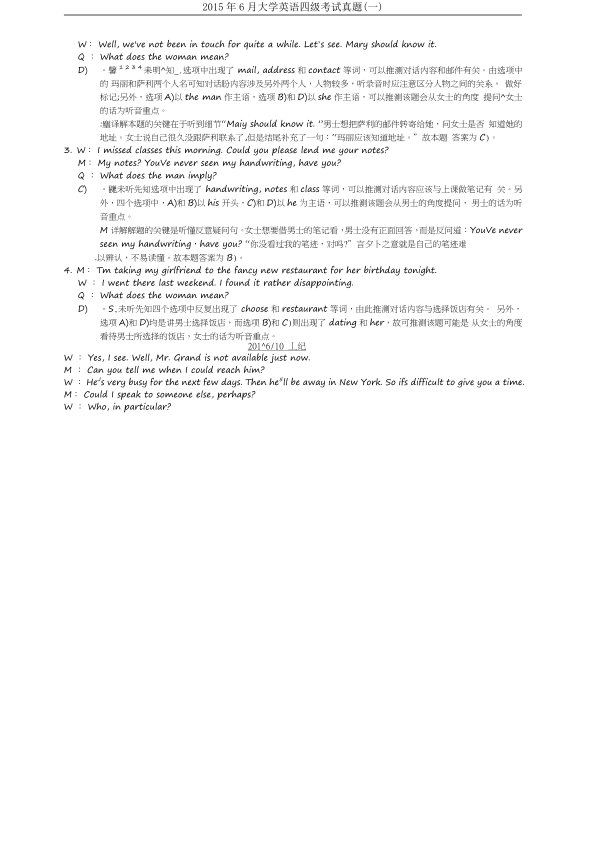
2015 年6 月大学英语四级考试真题(一)
W：Well, we've not been in touch for quite a while. Let’s see. Mary should know it.
Q ：What does the woman mean?
D)
。馨1 2 3 4 耒明^知_.选项中出现了mail, address 和contact 等词，可以推测对话内容和邮件有关。由选项中
的玛丽和萨利两个人名可知对话盼内容涉及另外两个人，人物较多，听录音时应注意区分人物之间的关系，做好
标记;另外，选项A)以the man 作主语，选项B)和D)以she 作主语，可以推测该题会从女士的角度提问^女士
的话为听音重点。
:塵译解本题的关键在于听到细节“Maiy should know it. ”男士想把萨利的邮件转寄给她，问女士是否知道她的
地址。女士说自己很久没跟萨利联系了,但是结尾补充了一句：“玛丽应该知道地址。”故本题答案为C)。
3. W：I missed classes this morning. Could you please lend me your notes?
M：My notes? YouVe never seen my handwriting, have you?
Q ：What does the man imply?
C)
。鼸未听先知选项中出现了handwriting, notes 和class 等词，可以推测对话内容应该与上课做笔记有关。另
外，四个选项中，A)和B)以his 开头，C)和D)以he 为主语，可以推测该题会从男士的角度提问，男士的话为听
音重点。
M 详解解题的关键是听懂反意疑问句。女士想要借男士的笔记看，男士没有正面回答，而是反问道：YouVe never
seen my handwriting，have you? “你没看过我的笔迹，对吗?”言夕卜之意就是自己的笔迹难
.以辨认，不易读懂。故本题答案为B)。
4. M：Tm taking my girlfriend to the fancy new restaurant for her birthday tonight.
W ：I went there last weekend. I found it rather disappointing.
Q ：What does the woman mean?
D)
。S,未听先知四个选项中反复出现了choose 和restaurant 等词，由此推测对话内容与选择饭店有关。另外，
选项A)和D)均是讲男士选择饭店，而选项B)和C)则出现了dating 和her，故可推测该题可能是从女士的角度
看待男士所选择的饭店，女士的话为听音重点。
201^6/10 丄纪
W ：Yes, I see. Well, Mr. Grand is not available just now.
M ：Can you tell me when I could reach him?
W ：HeJs very busy for the next few days. Then he5ll be away in New York. So ifs difficult to give you a time.
M：Could I speak to someone else, perhaps?
W ：Who, in particular?
查看 / 复制本页文字
2015 年6 月大学英语四级考试真题(一) W：Well, we've not been in touch for quite a while. Let’s see. Mary should know it. Q ：What does the woman mean? D) 。馨1 2 3 4 耒明^知_.选项中出现了mail, address 和contact 等词，可以推测对话内容和邮件有关。由选项中 的玛丽和萨利两个人名可知对话盼内容涉及另外两个人，人物较多，听录音时应注意区分人物之间的关系，做好 标记;另外，选项A)以the man 作主语，选项B)和D)以she 作主语，可以推测该题会从女士的角度提问^女士 的话为听音重点。 :塵译解本题的关键在于听到细节“Maiy should know it. ”男士想把萨利的邮件转寄给她，问女士是否知道她的 地址。女士说自己很久没跟萨利联系了,但是结尾补充了一句：“玛丽应该知道地址。”故本题答案为C)。 3. W：I missed classes this morning. Could you please lend me your notes? M：My notes? YouVe never seen my handwriting, have you? Q ：What does the man imply? C) 。鼸未听先知选项中出现了handwriting, notes 和class 等词，可以推测对话内容应该与上课做笔记有关。另 外，四个选项中，A)和B)以his 开头，C)和D)以he 为主语，可以推测该题会从男士的角度提问，男士的话为听 音重点。 M 详解解题的关键是听懂反意疑问句。女士想要借男士的笔记看，男士没有正面回答，而是反问道：YouVe never seen my handwriting，have you? “你没看过我的笔迹，对吗?”言夕卜之意就是自己的笔迹难 .以辨认，不易读懂。故本题答案为B)。 4. M：Tm taking my girlfriend to the fancy new restaurant for her birthday tonight. W ：I went there last weekend. I found it rather disappointing. Q ：What does the woman mean? D) 。S,未听先知四个选项中反复出现了choose 和restaurant 等词，由此推测对话内容与选择饭店有关。另外， 选项A)和D)均是讲男士选择饭店，而选项B)和C)则出现了dating 和her，故可推测该题可能是从女士的角度 看待男士所选择的饭店，女士的话为听音重点。 201^6/10 丄纪 W ：Yes, I see. Well, Mr. Grand is not available just now. M ：Can you tell me when I could reach him? W ：HeJs very busy for the next few days. Then he5ll be away in New York. So ifs difficult to give you a time. M：Could I speak to someone else, perhaps? W ：Who, in particular?